1. 准备工作
先建表，然后创建一个SpringBoot的工程，勾选Spring Web，MySQL，然后在pom中引入其他
<dependency>
<groupId>com.alibaba</groupId>
<artifactId>druid</artifactId>
<version>1.1.23</version>
</dependency>
<dependency>
<groupId>com.alibaba</groupId>
<artifactId>druid-spring-boot-starter</artifactId>
<version>1.2.6</version>
</dependency>
<dependency>
<groupId>com.baomidou</groupId>
<artifactId>mybatis-plus-boot-starter</artifactId>
<version>3.4.2</version>
</dependency>
<dependency>
<groupId>com.alibaba</groupId>
<artifactId>fastjson</artifactId>
<version>1.2.76</version>
</dependency>
<dependency>
<groupId>commons-lang</groupId>
<artifactId>commons-lang</artifactId>
<version>2.6</version>
</dependency>
<dependency>
<groupId>org.projectlombok</groupId>
<artifactId>lombok</artifactId>
<version>1.18.20</version>
</dependency>导入前端资源，放在resources目录下。直接放在resources目录下，需要配置一下资源映射
@Configuration
@Slf4j
public class WebMvcConfig extends WebMvcConfigurationSupport {
@Override
protected void addResourceHandlers(ResourceHandlerRegistry registry) {
log.info("开始进行静态资源映射...");
registry.addResourceHandler("/backend/**").addResourceLocations("classpath:/backend/");
registry.addResourceHandler("/front/**").addResourceLocations("classpath:/front/");
}
}之后配置一下yml文件就能访问静态页面了
server:
port: 8080
spring:
application:
name: reggie_take_out
datasource:
druid:
driver-class-name: com.mysql.cj.jdbc.Driver
url: jdbc:mysql://localhost:3306/reggie?serverTimezone=Asia/Shanghai&useUnicode=true&characterEncoding=utf-8&zeroDateTimeBehavior=convertToNull&useSSL=false&allowPublicKeyRetrieval=true
username: root
password: 123456
mybatis-plus:
configuration:
map-underscore-to-camel-case: true
log-impl: org.apache.ibatis.logging.stdout.StdOutImpl
global-config:
db-config:
id-type: ASSIGN_ID打开浏览器，访问 http://localhost/backend/page/login/login.html 可以看到登录页面，不过此时无法登录
2. 后台系统登录功能分析
2.1 创建对应的实体类
创建一个Employee类
@Data
public class Employee implements Serializable {
private static final long serialVersionUID = 1L;
private Long id;
private String username;
private String name;
private String password;
private String phone;
private String sex;
private String idNumber;
private Integer status;
private LocalDateTime createTime;
private LocalDateTime updateTime;
private Long createUser;
private Long updateUser;
}2.2 创建对应的Mapper和Service
@Mapper
public interface EmployeeMapper extends BaseMapper<Employee> {
}public interface EmployeeService extends IService<Employee> {
}@Service
public class EmployeeServiceImpl extends ServiceImpl<EmployeeMapper, Employee> implements EmployeeService {
}2.3 统一结果封装
编写一个Result类
@Data
@AllArgsConstructor
@NoArgsConstructor
public class Result<T> {
private Integer code; // 编码：1成功。0和其他数字失败
private String errMsg; // 错误信息
private T data; // 数据
private Map map = new HashMap(); // 动态数据
public static <T> Result<T> success(T data) {
Result<T> r = new Result<>();
r.code = 1; //成功状态码
r.data = data;
return r;
}
public static <T> Result<T> error(String errMsg) {
Result<T> r = new Result<>();
r.errMsg = errMsg; //设置错误信息
r.code = 0; //默认失败状态码，后期我们可以根据自己的需求来设置其他状态码
return r;
}
public Result<T> add(String msg, String value) {
this.map.put(msg, value);
return this;
}
}2.4 编写Controller
给EmployeeController类添加一个login方法
@RequestBody主要用于接收前端传递给后端的json字符串（请求体中的数据）HttpServletRequest作用：如果登录成功，将员工对应的id存到session一份，这样想获取一份登录用户的信息就可以随时获取出来
@RestController
@RequestMapping("/employee")
public class EmployeeController {
@Autowired
private EmployeeService employeeService;
/**
* 登入功能
* @param request
* @param employee
* @return
*/
//发送post请求
@PostMapping("/login")
public Result<Employee> login(HttpServletRequest request, @RequestBody Employee employee) {
String password = employee.getPassword();
password = DigestUtils.md5DigestAsHex(password.getBytes());
//这部分就是MP
LambdaQueryWrapper<Employee> lqw = new LambdaQueryWrapper<>();
//相当于sql里面的where
lqw.eq(Employee::getUsername, employee.getUsername());
Employee emp = employeeService.getOne(lqw);
if (emp == null) {
return Result.error("登陆失败");
}
if (!emp.getPassword().equals(password)) {
return Result.error("登录失败");
}
if (emp.getStatus() == 0) {
return Result.error("该用户已被禁用");
}
//存个Session，只存个id就行了
request.getSession().setAttribute("employee",emp.getId());
return Result.success(emp);
}
/**
* 登出功能
* @param request
* @return
*/
@PostMapping("/logout")
public Result<String> logout(HttpServletRequest request) {
request.getSession().removeAttribute("employee");
return Result.success("退出成功");
}
}2.5 登录测试
数据库中目前只有一条用户信息，username为admin，password为123456（已经经过MD5加密了）
现在我们访问 http://localhost/backend/page/login/login.html
输入正确的用户名和密码，正常登录，并跳转至http://localhost/backend/index.html
输入错误的用户名或密码，会显示登陆失败
对应的HTML代码如下
methods: {
async handleLogin() {
this.$refs.loginForm.validate(async (valid) => {
if (valid) {
this.loading = true
let res = await loginApi(this.loginForm)
if (String(res.code) === '1') {
localStorage.setItem('userInfo',JSON.stringify(res.data))
window.location.href= '/backend/index.html'
} else {
this.$message.error(res.msg)
this.loading = false
}
}
})
}
}对应的JS代码如下
function loginApi(data) {
return $axios({
'url': '/employee/login',
'method': 'post',
data
})
}
function logoutApi(){
return $axios({
'url': '/employee/logout',
'method': 'post',
})
}2.6 登出功能
先·简单分析一下前端代码
登出的功能是在index页面的，右上角有一个按钮，点击就能登出
<div class="right-menu">
<!--这里动态的显示登录的用户名-->
<div class="avatar-wrapper">{{ userInfo.name }}</div>
<!--这里就是登出的按钮-->
<img src="images/icons/btn_close@2x.png" class="outLogin" alt="退出" @click="logout" />
</div>对应的函数如下，这里的logoutApi是用来发送post请求的
logout() {
logoutApi().then((res)=>{
if(res.code === 1){
localStorage.removeItem('userInfo')
window.location.href = '/backend/page/login/login.html'
}
})
}
function logoutApi(){
return $axios({
'url': '/employee/logout',
'method': 'post',
})
}登出功能的后端操作很简单，只要删除session就好了
/**
* 登出功能
* @param request
* @return
*/
@PostMapping("/logout")
public Result<String> logout(HttpServletRequest request) {
request.getSession().removeAttribute("employee");
return Result.success("退出成功");
}2.7 完善登录功能
问题分析：
- 之前的登录功能，我们不登录，直接访问 http://localhost/backend/index.html 也可以正常访问，这显然是不合理的
- 我们希望看到的效果是，只有登录成功才能看到页面，未登录状态则跳转到登录页面
- 那么具体改如何实现呢？使用过滤器或拦截器，在过滤器或拦截器中判断用户是否登录，然后在选择是否跳转到对应页面
2.7.1 测试Filter拦截路径
@Slf4j
@WebFilter(filterName = "loginCheckFilter", urlPatterns = "/*")
public class LoginCheckFilter implements Filter {
@Override
public void doFilter(ServletRequest servletRequest, ServletResponse servletResponse, FilterChain filterChain) throws IOException, ServletException {
HttpServletRequest request = (HttpServletRequest) servletRequest;
HttpServletResponse response = (HttpServletResponse) servletResponse;
//将拦截到的URI输出到日志，{}是占位符，将自动填充request.getRequestURI()的内容
log.info("拦截到的URI：{}", request.getRequestURI());
//放行
filterChain.doFilter(request, response);
}
}并在启动类上加入注解@ServletComponentScan
@SpringBootApplication
@ServletComponentScan
public class ReggieApplication {
public static void main(String[] args) {
SpringApplication.run(ReggieApplication.class, args);
}
}启动服务器，访问index页面，查看日志，现在可以拦截到URI了
2022-09-29 18:05:53.190 …… : 拦截到的URI：/backend/index.html
2022-09-29 18:06:01.174 …… : 拦截到的URI：/employee/page
2.7.2 编写Filter逻辑
首先看一下JS代码：
// 响应拦截器
service.interceptors.response.use(res => {
if (res.data.code === 0 && res.data.msg === 'NOTLOGIN') { // 返回登录页面格式
console.log('---/backend/page/login/login.html---')
localStorage.removeItem('userInfo')
window.top.location.href = '/backend/page/login/login.html'
} else {
return res.data
}
}知道了拦截的返回格式后，开始编写
@Slf4j
@WebFilter(filterName = "LoginCheckFilter", urlPatterns = "/*")
public class LoginCheckFilter implements Filter {
//路径匹配器，支持通配符
private static final AntPathMatcher PATH_MATCHER = new AntPathMatcher();
@Override
public void doFilter(ServletRequest servletRequest, ServletResponse servletResponse, FilterChain filterChain) throws IOException, ServletException {
HttpServletRequest request = (HttpServletRequest) servletRequest;
HttpServletResponse response = (HttpServletResponse) servletResponse;
// 1.获取本次请求的URI
String uri = request.getRequestURI();
// 定义不需要处理的请求路径
String[] urls = new String[]{
"/employee/login",
"/employee/logout",
// /** 拦截所有的文件夹及里面的子文件夹
// 即所有静态页面可以访问（只有骨架没有数据）
"/backend/**",
"/front/**"
};
// 2.判断本次请求是否需要拦截处理
boolean check = check(urls, uri);
// 3.如果不需要处理直接放行
if (check) {
log.info("本次请求：{}，不需要处理",uri);
filterChain.doFilter(request, response);
return;
}
// 4.如果需要处理，判定登录状态，若登录则放行
if (request.getSession().getAttribute("employee") != null) {
log.info("用户已登录，id为{}",request.getSession().getAttribute("employee"));
filterChain.doFilter(request, response);
return;
}
// 5.如果未登录则返回未登录结果,通过输出流方式向客户端页面响应数据
log.info("本次请求：{}",uri);
log.info("用户未登录");
log.info("用户id{}",request.getSession().getAttribute("employee"));
response.getWriter().write(JSON.toJSONString(R.error("NOTLOGIN")));
}
//检查是否匹配
private boolean check(String[] urls, String uri) {
for (String url : urls) {
boolean match = PATH_MATCHER.match(url, uri);
if (match) return true;
}
return false;
}
}2.7.3 测试登录
当我们直接访问 http://localhost:8080/backend/index.html 时，日志输出如下
：拦截到请求：/employee/page
: 用户未登录
: 用户id为：null随后将自动跳转至登录页面
: 拦截到请求：/employee/login
: 本次请求：/employee/login，不需要处理自动跳转是因为：访问http://localhost:8080/backend/index.html时会默认访问page/member/list.html，list.html又访问/employee/page
员工管理
3. 添加员工
3.1 流程分析
实现功能之前，我们先梳理一下整个执行流程
- 页面发送ajax请求，将新增员工页面中输入的数据以json的形式提交到服务端
- 服务端Controller接收页面提交的数据并调用Service将数据进行保存
- Service调用Mapper操作数据库，保存数据
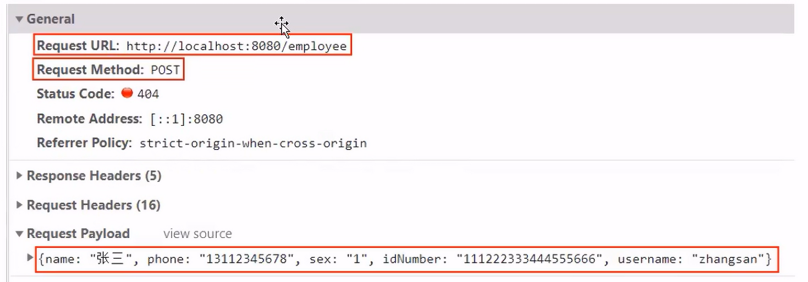
3.2 具体实现
新增的员工信息只有部分数据，id，password，status，createTime等都还没有指定。
id这个就用自动生成的就好了（雪花算法/自动递增）password当你注册某些教育网站的时候，一般都会给你默认指定一个密码（身份证后六位，123456等），所以我们这里的解决策略就直接指定一个123456了，但是这个密码不能直接在数据库中设为默认值，因为数据库设置的默认值无法加密status设定员工的状态，1表示启用，0表示禁用，这个表里直接设置了默认值createTime创建时间，这个就指定当前时间就好了updateTime作用同上createUser这个是创建人的ID，我们首先需要一个管理员账号登录到后台管理界面，然后才能添加员工信息，所以我们也需要对这个员工信息的创建人，进行设置，避免出现莫名的员工账号，依靠这个可以溯源updateUser作用同上
@PostMapping
public R<String> save(HttpServletRequest request, @RequestBody Employee employee) {
// 设置员工的password，createTime，updateTime,createUser,updateUser
employee.setPassword(DigestUtils.md5DigestAsHex("123456".getBytes()));
employee.setCreateTime(LocalDateTime.now());
employee.setUpdateTime(LocalDateTime.now());
// 从session获取当前登录用户
Long employee1 = (Long) request.getSession().getAttribute("employee");
employee.setCreateUser(employee1);
employee.setUpdateUser(employee1);
employeeService.save(employee);
return R.success("添加员工成功");
}值得注意的一点是，username不能重复，因为在建表的时候设定了unique，只能存在唯一的username，如果存入相同的username则会报错。
这个报错目前也不太人性化，咱也不知道具体为啥添加失败了，所以我们还得继续完善一下，那么具体该怎么完善呢？可以使用全局统一异常处理
3.3 完善全局异常处理器并测试
在com.blog.common包下创建一个全局异常处理类GlobalExceptionHandler，并添加exceptionHandler方法用来捕获异常，并返回结果
@ControllerAdvice(annotations = {RestController.class, Controller.class})
@ResponseBody
@Slf4j
public class GlobalExceptionHandler {
@ExceptionHandler(SQLIntegrityConstraintViolationException.class)
public R<String> exceptionHandler(SQLIntegrityConstraintViolationException ex) {
log.error(ex.getMessage());
//如果包含Duplicate entry，则说明有条目重复
if (ex.getMessage().contains("Duplicate entry")) {
//对字符串切片
String[] s = ex.getMessage().split(" ");
//报错字符串格式是固定的，s[2]这个位置必然是username
return R.error("用户名" + s[2] + "已存在");
}
return R.error("未知错误");
}
}4. 员工信息分页查询
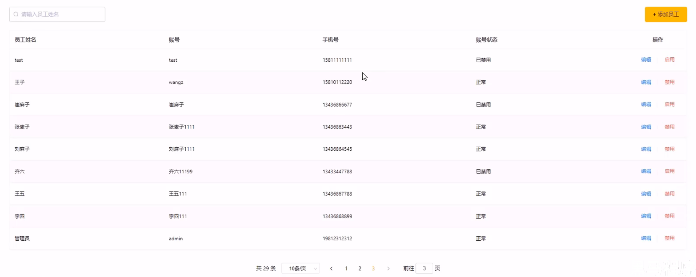
在开发代码之前，需要梳理一下整个程序的执行过程:
- 页面发送ajax请求，将分页查询参数(page、pageSize、name)提交到服务
- 服务端Controller接收页面提交的数据并调用Service查询数据
- Service调用Mapper操作数据库，查询分页数据
- Controller将查询到的分页数据响应给页面
- 页面接收到分页数据并通过ElementUI的Table组件展示到页面上
4.1 前端代码分析
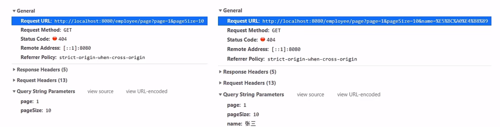
关于数据显示的功能，就是由这部分代码完成的
async init () {
const params = {
page: this.page,
pageSize: this.pageSize,
name: this.input ? this.input : undefined
}
await getMemberList(params).then(res => {
if (String(res.code) === '1') {
this.tableData = res.data.records || [] // 返回的列表数据在这里
this.counts = res.data.total
}
}).catch(err => {
this.$message.error('请求出错了：' + err)
})
}
function getMemberList (params) {
return $axios({
url: '/employee/page',
method: 'get',
params
})
}4.2 配置MyBatisPlus分页插件
新建com.itheima.config包，并在其中新建MybatisPlusConfig类
@Configuration
public class MybatisPlusConfig {
@Bean
public MybatisPlusInterceptor mybatisPlusInterceptor() {
MybatisPlusInterceptor mybatisPlusInterceptor = new MybatisPlusInterceptor();
mybatisPlusInterceptor.addInnerInterceptor(new PaginationInnerInterceptor());
return mybatisPlusInterceptor;
}
}4.3 编写具体的业务逻辑
@GetMapping("/page")
public Result<Page> page(int page, int pageSize, String name) {
log.info("page={},pageSize={},name={}", page, pageSize, name);
//构造分页构造器
Page<Employee> pageInfo = new Page<>(page, pageSize);
//构造条件构造器
LambdaQueryWrapper<Employee> lqw = new LambdaQueryWrapper<>();
//添加过滤条件（当我们没有输入name时，就相当于查询所有了）
lqw.like(!(name == null || "".equals(name)), Employee::getName, name);
//并对查询的结果进行降序排序，根据更新时间
lqw.orderByDesc(Employee::getUpdateTime);
//执行查询
employeeService.page(pageInfo, wrapper);
return Result.success(pageInfo);
}5. 启用/禁用员工账号
5.1 需求分析
- 在员工管理列表页面，可以对某个员工账号进行启用或者禁用操作。账号禁用的员工不能登录系统，启用后的员工可以正常登录。
- 需要注意，只有管理员（admin用户）可以对其他普通用户进行启用、禁用操作，所以普通用户登录系统后启用、禁用按钮不显示。
- 管理员admin登录系统可以对所有员工账号进行启用、禁用操作。
- 如果某个员工账号状态为正常，则按钮显示为“禁用”，如果员工账号状态为已禁用，则按钮显示为“启用”
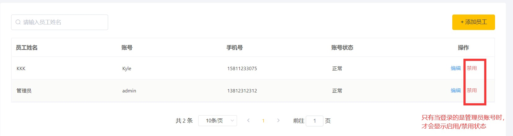
5.2 具体实现
页面发送ajax请求，将参数(id、status)提交到服务端
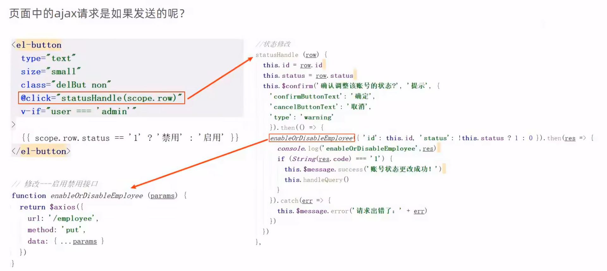
服务端Controller接收页面提交的数据并调用Service更新数据
Service调用Mapper操作数据库
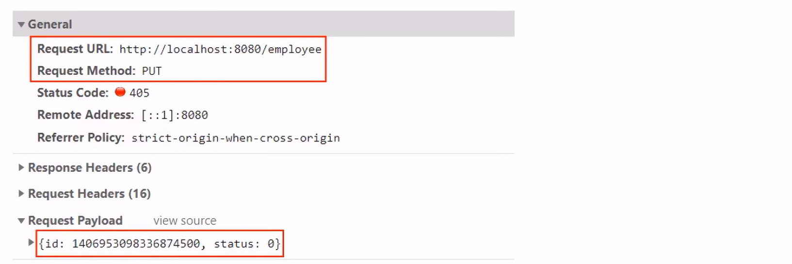
@PutMapping
public Result<String> update(@RequestBody Employee employee, HttpServletRequest request) {
log.info(employee.toString());
Long id = (Long) request.getSession().getAttribute("employee");
employee.setUpdateUser(id);
employee.setUpdateTime(LocalDateTime.now());
employeeService.updateById(employee);
return Result.success("员工信息修改成功");
}查看数据库，我们发现status并没有被修改
通过查看日志，我们发现更新操作并没有完成，这是怎么回事呢？
==> Preparing: UPDATE employee SET status=?, update_time=?, update_user=? WHERE id=?
==> Parameters: 0(Integer), 2022-10-04T09:37:21.459(LocalDateTime), 1(Long), 1575840690817011700(Long)
==> Updates: 0
- 仔细观察这里的id值为
1575840690817011700，而实际的id值为1575840690817011713- 问题的原因：
- JS对Long型数据进行处理时丢失精度，导致提交的id和数据库中的id不一致。
- 如何解决这个问题?
- 我们可以在服务端给页面响应json数据时进行处理，将Long型数据统一转为String字符串
5.3 配置状态转换器
import com.fasterxml.jackson.databind.DeserializationFeature;
import com.fasterxml.jackson.databind.module.SimpleModule;
import com.fasterxml.jackson.databind.ser.std.ToStringSerializer;
import com.fasterxml.jackson.datatype.jsr310.deser.LocalDateDeserializer;
import com.fasterxml.jackson.datatype.jsr310.deser.LocalDateTimeDeserializer;
import com.fasterxml.jackson.datatype.jsr310.deser.LocalTimeDeserializer;
import com.fasterxml.jackson.datatype.jsr310.ser.LocalDateSerializer;
import com.fasterxml.jackson.datatype.jsr310.ser.LocalDateTimeSerializer;
import com.fasterxml.jackson.datatype.jsr310.ser.LocalTimeSerializer;
import java.math.BigInteger;
import java.time.LocalDate;
import java.time.LocalDateTime;
import java.time.LocalTime;
import java.time.format.DateTimeFormatter;
import static com.fasterxml.jackson.databind.DeserializationFeature.FAIL_ON_UNKNOWN_PROPERTIES;
/**
* 对象映射器:基于jackson将Java对象转为json，或者将json转为Java对象
* 将JSON解析为Java对象的过程称为 [从JSON反序列化Java对象]
* 从Java对象生成JSON的过程称为 [序列化Java对象到JSON]
*/
public class JacksonObjectMapper extends ObjectMapper {
public static final String DEFAULT_DATE_FORMAT = "yyyy-MM-dd";
public static final String DEFAULT_DATE_TIME_FORMAT = "yyyy-MM-dd HH:mm:ss";
public static final String DEFAULT_TIME_FORMAT = "HH:mm:ss";
public JacksonObjectMapper() {
super();
//收到未知属性时不报异常
this.configure(FAIL_ON_UNKNOWN_PROPERTIES, false);
//反序列化时，属性不存在的兼容处理
this.getDeserializationConfig().withoutFeatures(DeserializationFeature.FAIL_ON_UNKNOWN_PROPERTIES);
SimpleModule simpleModule = new SimpleModule()
.addDeserializer(LocalDateTime.class, new LocalDateTimeDeserializer(DateTimeFormatter.ofPattern(DEFAULT_DATE_TIME_FORMAT)))
.addDeserializer(LocalDate.class, new LocalDateDeserializer(DateTimeFormatter.ofPattern(DEFAULT_DATE_FORMAT)))
.addDeserializer(LocalTime.class, new LocalTimeDeserializer(DateTimeFormatter.ofPattern(DEFAULT_TIME_FORMAT)))
.addSerializer(BigInteger.class, ToStringSerializer.instance)
.addSerializer(Long.class, ToStringSerializer.instance)
.addSerializer(LocalDateTime.class, new LocalDateTimeSerializer(DateTimeFormatter.ofPattern(DEFAULT_DATE_TIME_FORMAT)))
.addSerializer(LocalDate.class, new LocalDateSerializer(DateTimeFormatter.ofPattern(DEFAULT_DATE_FORMAT)))
.addSerializer(LocalTime.class, new LocalTimeSerializer(DateTimeFormatter.ofPattern(DEFAULT_TIME_FORMAT)));
//注册功能模块 例如，可以添加自定义序列化器和反序列化器
this.registerModule(simpleModule);
}
}扩展Mvc框架的消息转换器
@Configuration
@Slf4j
public class WebMvcConfig extends WebMvcConfigurationSupport {
@Override
protected void addResourceHandlers(ResourceHandlerRegistry registry) {
registry.addResourceHandler("/backend/**").addResourceLocations("classpath:/backend/");
registry.addResourceHandler("/front/**").addResourceLocations("classpath:/front/");
}
@Override
protected void extendMessageConverters(List<HttpMessageConverter<?>> converters) {
MappingJackson2HttpMessageConverter messageConverter = new MappingJackson2HttpMessageConverter();
//设置对象转化器，底层使用jackson将java对象转为json
messageConverter.setObjectMapper(new JacksonObjectMapper());
//将上面的消息转换器对象追加到mvc框架的转换器集合当中(index设置为0，表示设置在第一个位置，避免被其它转换器接收，从而达不到想要的功能)
converters.add(0, messageConverter);
}
}此时可以修改成功
6. 编辑员工信息
在开发代码之前，我们先来梳理一下整个操作流程与对应程序的执行顺序
- 点击编辑按钮时，页面将跳转到
add.html，并在url中携带参数员工id - 在
add.html页面中获取url中的参数员工id - 发送
ajax请求，请求服务端，同时提交员工id参数 - 服务端接受请求，并根据
员工id查询员工信息，并将员工信息以json形式响应给页面 - 页面接收服务端响应的
json数据，并通过Vue的双向绑定进行员工信息回显 - 点击保存按钮，发送ajax请求，将页面中的员工信息以json形式提交给服务端
- 服务端接受员工信息，并进行处理，完成后给页面响应
- 页面接收到服务端响应信息后进行相应处理
6.1 页面根据id回显功能实现
6.1.1 前端分析
- 点击编辑按钮时，页面将跳转到
add.html，并在url中携带参数员工id
编辑按钮绑定的点击事件为addMemberHandle(scope.row.id)
<el-button
type="text"
size="small"
class="blueBug"
@click="addMemberHandle(scope.row.id)"
:class="{notAdmin:user !== 'admin'}"
>
编辑
</el-button>
addMemberHandle (st) {
if (st === 'add'){
window.parent.menuHandle({
id: '2',
url: '/backend/page/member/add.html',
name: '添加员工'
},true)
} else {
window.parent.menuHandle({
id: '2',
url: '/backend/page/member/add.html?id='+st, //这里
name: '修改员工'
},true)
}
}- 在
add.html页面中获取url中的参数员工id
created() {
this.id = requestUrlParam('id')
this.actionType = this.id ? 'edit' : 'add'
if (this.id) {
this.init()
}
}
//获取url地址上面的参数
function requestUrlParam(argname){
var url = location.href
var arrStr = url.substring(url.indexOf("?")+1).split("&")
for(var i =0;i<arrStr.length;i++)
{
var loc = arrStr[i].indexOf(argname+"=")
if(loc!=-1){
return arrStr[i].replace(argname+"=","").replace("?","")
}
}
return ""
}- 发送
ajax请求，请求服务端，同时提交员工id参数
async init () {
queryEmployeeById(this.id).then(res => {
console.log(res)
if (String(res.code) === '1') {
console.log(res.data)
this.ruleForm = res.data
this.ruleForm.sex = res.data.sex === '0' ? '女' : '男'
// this.ruleForm.password = ''
} else {
this.$message.error(res.msg || '操作失败')
}
})
}
// 修改页面反查详情接口
function queryEmployeeById (id) {
return $axios({
url: `/employee/${id}`,
method: 'get'
})
}6.1.2 具体实现
@GetMapping("/{id}")
public R<Employee> getById(@PathVariable Long id) {
log.info("根据id查询员工信息...");
Employee employee = employeeService.getById(id);
if (employee != null) {
return R.success(employee);
}
return R.error("没有查询到对应员工信息");
}6.2 保存功能实现
- 点击保存按钮，发送ajax请求，将页面中的员工信息以json形式提交给服务端
<el-button
type="primary"
@click="submitForm('ruleForm', false)"
>
保存
</el-button>
submitForm (formName, st) {
this.$refs[formName].validate((valid) => {
if (valid) {
if (this.actionType === 'add') {
const params = {
...this.ruleForm,
sex: this.ruleForm.sex === '女' ? '0' : '1'
}
addEmployee(params).then(res => {
if (res.code === 1) {
this.$message.success('员工添加成功！')
if (!st) {
this.goBack()
} else {
this.ruleForm = {
username: '',
'name': '',
'phone': '',
// 'password': '',
// 'rePassword': '',/
'sex': '男',
'idNumber': ''
}
}
} else {
this.$message.error(res.msg || '操作失败')
}
}).catch(err => {
this.$message.error('请求出错了：' + err)
})
} else {
const params = {
...this.ruleForm,
sex: this.ruleForm.sex === '女' ? '0' : '1'
}
editEmployee(params).then(res => { // 这里
if (res.code === 1) {
this.$message.success('员工信息修改成功！')
this.goBack()
} else {
this.$message.error(res.msg || '操作失败')
}
}).catch(err => {
this.$message.error('请求出错了：' + err)
})
}
} else {
console.log('error submit!!')
return false
}
})
}
// 修改---添加员工
function editEmployee (params) {
return $axios({
url: '/employee',
method: 'put',
data: { ...params }
})
}由于修改员工信息也是发送的PUT请求，与之前启用/禁用员工账号是一致的，而且前面我们已经写过了PUT请求的Controller层
所以当我们点击保存按钮时，调用submitForm函数，而在submitForm函数中我们又调用了editEmployee函数，发送PUT请求，实现修改功能
@PutMapping
public Result<String> update(@RequestBody Employee employee, HttpServletRequest request) {
log.info(employee.toString());
Long id = (Long) request.getSession().getAttribute("employee");
employee.setUpdateUser(id);
employee.setUpdateTime(LocalDateTime.now());
employeeService.updateById(employee);
return Result.success("员工信息修改成功");
}分类管理
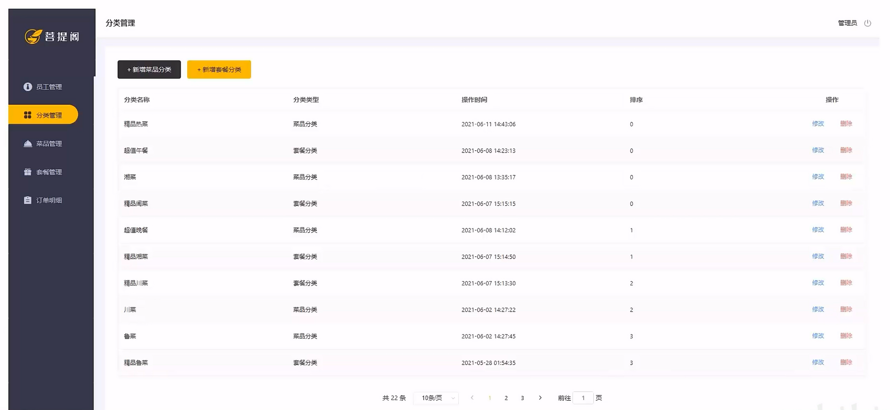
7. 公共字段自动填充
7.1 问题分析
- 前面我们已经完成了对员工数据的添加与修改，在添加/修改员工数据的时候，都需要指定一下创建人、创建时间、修改人、修改时间等字段，而这些字段又属于公共字段，不仅员工表有这些字段，在菜品表、分类表等其他表中，也拥有这些字段。
- 那我们有没有办法让这些字段在一个地方统一管理呢？这样可以简化我们的开发
- 答案就是使用
MybatisPlus给我们提供的公共字段自动填充功能
- 答案就是使用
7.2 代码实现
- 在实体类的属性上方加入
@TableFiled注解，指定自动填充的策略
@Data
public class Employee implements Serializable {
private static final long serialVersionUID = 1L;
private Long id;
private String username;
private String name;
private String password;
private String phone;
private String sex;
private String idNumber;
private Integer status;
@TableField(fill = FieldFill.INSERT)//插入时填充字段值
private LocalDateTime createTime;
@TableField(fill = FieldFill.INSERT_UPDATE)//插入和更新时填充字段值
private LocalDateTime updateTime;
@TableField(fill = FieldFill.INSERT)//插入时填充字段值
private Long createUser;
@TableField(fill = FieldFill.INSERT_UPDATE)//插入和更新时填充字段值
private Long updateUser;
}- 按照框架要求编写元数据对象处理器，在此类中统一对公共字段赋值，此类需要实现
MetaObjectHandler接口
实现接口之后，重写两个方法，一个是插入时填充，一个是修改时填充
关于字段填充方式，使用metaObject的setValue来实现
@Component
@Slf4j
public class MyMetaObjectHandler implements MetaObjectHandler {
@Override
public void insertFill(MetaObject metaObject) {
log.info("公共字段自动填充(insert)...");
log.info(metaObject.toString());
metaObject.setValue("createTime", LocalDateTime.now());
metaObject.setValue("updateTime", LocalDateTime.now());
}
@Override
public void updateFill(MetaObject metaObject) {
log.info("公共字段自动填充(update)...");
log.info(metaObject.toString());
metaObject.setValue("updateTime", LocalDateTime.now());
}
}7.3 功能完善
关于id的获取，我们之前是存到session里的，但在
MyMetaObjectHandler类中不能获得HttpSession对象，所以我们需要用其他方式来获取登录用户Id。- 可以使用
ThreadLocal来解决这个问题
- 可以使用
在学习ThreadLocal之前，我们需要先确认一个事情，就是客户端发送的每次http请求，对应的在服务端都会分配一个新的线程来处理，在处理过程中涉及到下面类中的方法都属于相同的一个线程:
LocalCheekFilter中的doFilter方法EmployeeController中的update方法MyMetaObjectHandler中的updateFill方法
那么什么是ThreadLocal?
- ThreadLocal并不是一个Thread，而是Thread的局部变量
- 当使用ThreadLocal维护变量时，ThreadLocal为每个使用该变量的线程提供独立的变量副本
- 所以每一个线程都可以独立地改变自己的副本，而不会影响其它线程所对应的副本
- ThreadLocal为每个线程提供单独一份存储空间，具有线程隔离的效果，只有在线程内才能获取到对应的值，线程外则不能访问。
ThreadLocal常用方法:
public void set(T value)设置当前线程的线程局部变量的值public T get()返回当前线程所对应的线程局部变量的值
那么我们如何用ThreadLocal来解决我们上述的问题呢？
- 我们可以在
LoginCheckFilter的doFilter方法中获取当前登录用户id，并调用ThreadLocal的set方法来设置当前线程的线程局部变量的值（用户id)，然后在MyMetaObjectHandler的updateFill方法中调用ThreadLocal的get方法来获得当前线程所对应的线程局部变量的值（用户id)。
具体实现
- 在com.blog.common包下新建BaseContext类
- 作用：基于ThreadLocal的封装工具类，用于保护和获取当前用户id
public class BaseContext {
// 用户保存、获取当前登录用户id
private static ThreadLocal<Long> threadLocal = new ThreadLocal<>();
public static void setCurrentId(Long id) {
threadLocal.set(id);
}
public static Long getCurrentId() {
return threadLocal.get();
}
}- 随后在LoginCheckFilter类中添加代码
使用request.getSession来获取当前登录用户的id值
//4.判断登录状态，如果已登录，则直接放行
if (request.getSession().getAttribute("employee") != null) {
log.info("用户已登录，id为{}", request.getSession().getAttribute("employee"));
//根据session来获取之前我们存的id值
Long empId = (Long) request.getSession().getAttribute("employee");
//使用BaseContext封装id
BaseContext.setCurrentId(empId);
filterChain.doFilter(request, response);
return;
}- 在MyMetaObjectHandler类中，添加设置id的代码
@Component
@Slf4j
public class MyMetaObjectHandler implements MetaObjectHandler {
@Override
public void insertFill(MetaObject metaObject) {
log.info("公共字段填充（create）...");
metaObject.setValue("createTime", LocalDateTime.now());
metaObject.setValue("updateTime", LocalDateTime.now());
//设置创建人id
metaObject.setValue("createUser", BaseContext.getCurrentId());
metaObject.setValue("updateUser", BaseContext.getCurrentId());
}
@Override
public void updateFill(MetaObject metaObject) {
log.info("公共字段填充（insert）...");
metaObject.setValue("updateTime", LocalDateTime.now());
//设置更新人id
metaObject.setValue("updateUser", BaseContext.getCurrentId());
}
}8. 新增菜品分类
8.1 需求分析
- 后台系统中可以管理分类信息，分类包括两种类型，分别是菜品分类和套餐分类
- 当我们在后台系统中添加菜品时，需要选择一个菜品分类
- 当我们在后台系统中天啊及一个套餐时，需要选择一个套餐分类
- 在移动端也会按照菜品分类和套餐分类来战士对应的菜品和套餐
可以在后台系统的分类管理页面分别添加菜品分类和套餐分类，如下:
分类管理页面
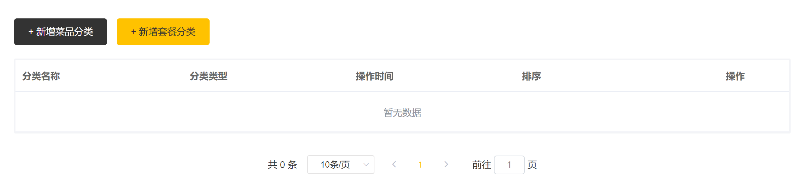
新增菜品分类表单
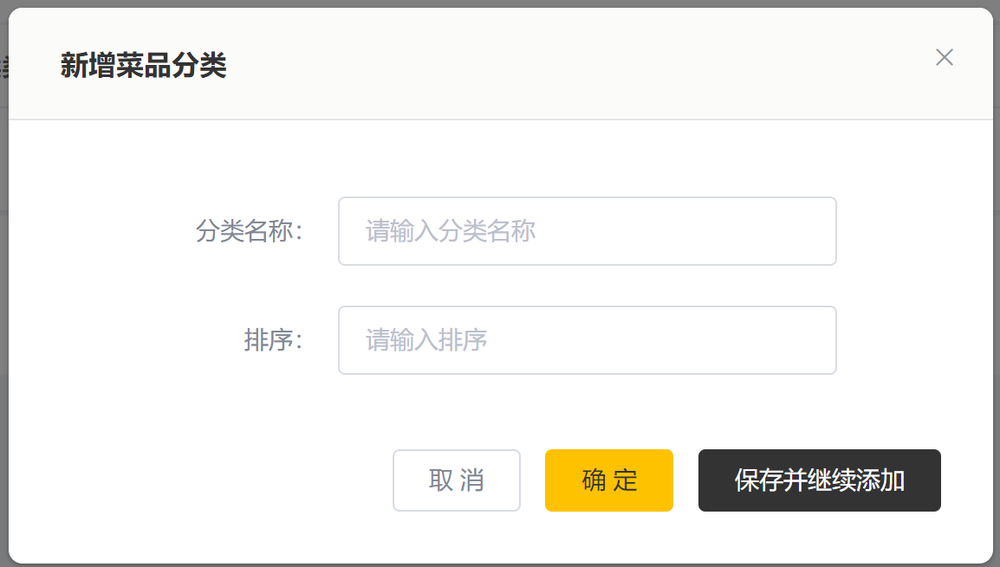
新增套餐分类表单
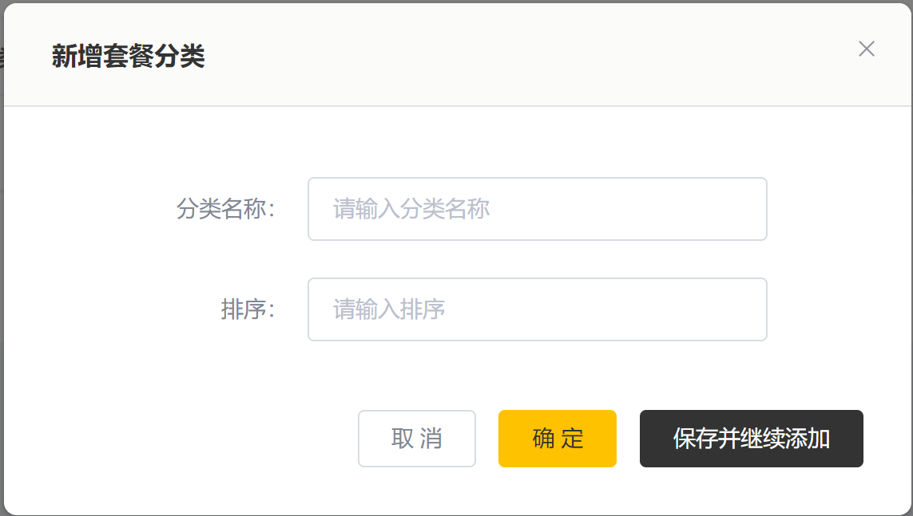
8.2 数据模型
简单浏览一下category表中的数据
| Field | Type | Collation | Null | Key | Default | Comment |
|---|---|---|---|---|---|---|
| id | bigint | (NULL) | NO | PRI | (NULL) | 主键 |
| type | int | (NULL) | YES | 类型 1 菜品分类 2 套餐分类 | ||
| name | varchar(64) | utf8_bin | NO | UNI | (NULL) | 分类名称 |
| sort | int | (NULL) | NO | 0 | 顺序 | |
| create_time | datetime | (NULL) | NO | (NULL) | 创建时间 | |
| update_time | datetime | (NULL) | NO | (NULL) | 更新时间 | |
| create_user | bigint | (NULL) | NO | (NULL) | 创建人 | |
| update_user | bigint | (NULL) | NO | (NULL) | 修改人 |
id是主键，name分类名称是unique唯一的，type为1表示菜品分类，type为2表示套餐分类
8.3 准备工作
在开发业务之前，先将需要用到的类和接口的基本结构先创建好
- 实体类Category，对应上表来创建
菜品分类也有createUser和createTime等字段，也可以用上面的公共字段自动填充
@Data
public class Category implements Serializable {
private static final long serialVersionUID = 1L;
private Long id;
//类型 1 菜品分类 2 套餐分类
private Integer type;
//分类名称
private String name;
//顺序
private Integer sort;
//创建时间
@TableField(fill = FieldFill.INSERT)
private LocalDateTime createTime;
//更新时间
@TableField(fill = FieldFill.INSERT_UPDATE)
private LocalDateTime updateTime;
//创建人
@TableField(fill = FieldFill.INSERT)
private Long createUser;
//修改人
@TableField(fill = FieldFill.INSERT_UPDATE)
private Long updateUser;
}- Mapper接口CategoryMapper
@Mapper
public interface CategoryMapper extends BaseMapper<Category> {
}- 业务层接口CategoryService
public interface CategoryService extends IService<Category> {
}- 业务层实现类CatrgoryServiceImpl
@Service
public class CategoryServiceImpl extends ServiceImpl<CategoryMapper, Category> implements CategoryService {
}- 控制层CategoryController
@Slf4j
@RestController
@RequestMapping("/category")
public class CategoryController {
@Autowired
private CategoryService categoryService;
}8.4 流程分析
在编写代码之前，我们还是先来分析一下整个流程
- 页面发送ajax请求，将新增分类窗口输入的数据以json形式提交给服务端
- 服务端Controller接收页面提交的数据并调用Service将数据存储到数据库
- Service调用Mapper操作数据库，保存数据
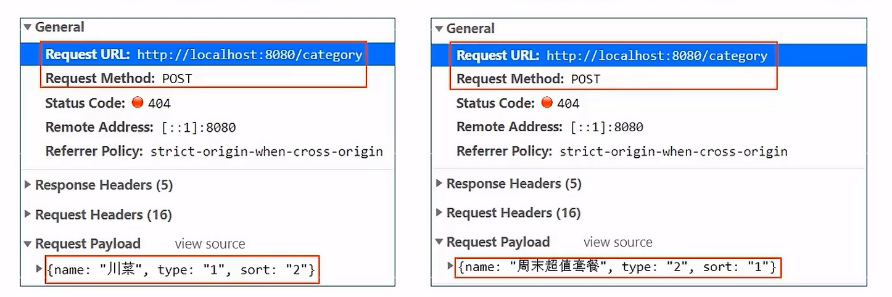
8.5 代码实现
服务端只需要将接收到的json数据添加到数据库中，并响应一个成功的提示信息
@PostMapping
public Result<String> save(@RequestBody Category category) {
log.info("category:{}", category);
categoryService.save(category);
return Result.success("新增分类成功");
}9. 分类信息分页查询
与之前的员工信息分页查询类似
9.1 流程分析
按照惯例，我们还是先来分析一下流程
- 页面发送Ajax请求，将分页查询的参数（page、pageSize）提交到服务端
- 服务端Controller接受到页面提交的数据之后，调用Service进行查询
- Service调用Mapper操作数据库，查询分页数据
- Controller将查询到的分页数据响应给页面
- 页面接收分页数据，并通过ElementUI的Table组件战士到页面上
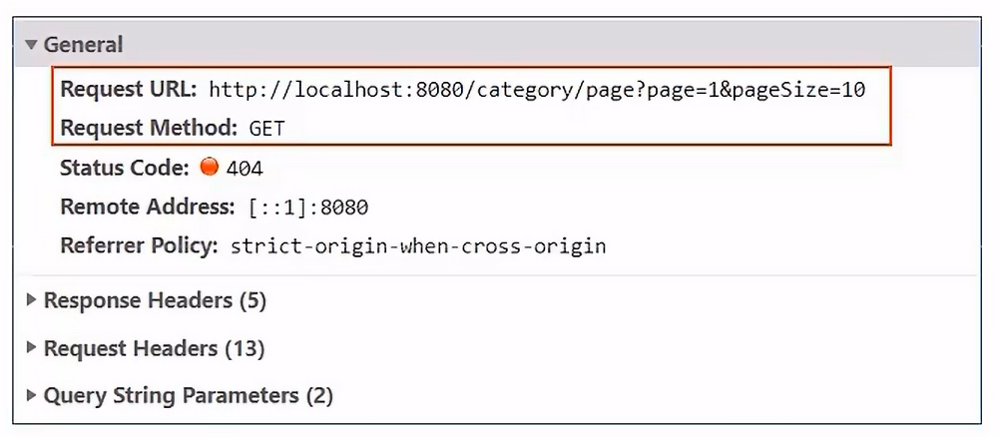
9.2 代码实现
在CategoryController类中编写page方法
@GetMapping("/page")
public Result<Page> page(int page, int pageSize) {
//分页构造器
Page<Category> pageInfo = new Page<>(page, pageSize);
//条件查询器
LambdaQueryWrapper<Category> queryWrapper = new LambdaQueryWrapper<>();
//添加排序条件
queryWrapper.orderByDesc(Category::getSort);
//分页查询
categoryService.page(pageInfo, queryWrapper);
return Result.success(pageInfo);
}10. 删除分类
10.1 需求分析
- 在分类管理列表页面，可以对某个分类进行删除操作
- 需要注意的是：当分类关联了菜品或者套餐时，此分类将不允许被删除
10.2 流程分析
按照惯例，继续分析一遍流程
- 页面发送ajax请求，将参数(id)提交给服务端
- 服务端Controller接收页面提交的数据，并调用Service删除数据
- Service调用Mapper操作数据库
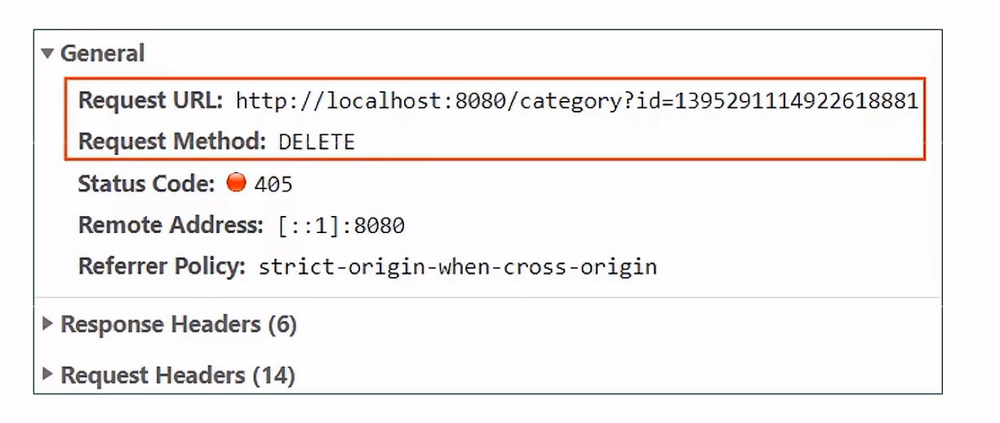
10.3 前端代码分析
删除按钮绑定了deleteHandle函数
HTML
<el-button
type="text"
size="small"
class="delBut non"
@click="deleteHandle(scope.row.id)"
>
删除
</el-button>
deleteHandle(id) {
this.$confirm('此操作将永久删除该文件, 是否继续?', '提示', {
'confirmButtonText': '确定',
'cancelButtonText': '取消',
'type': 'warning'
}).then(() => {
deleCategory(id).then(res => {
if (res.code === 1) {
this.$message.success('删除成功！')
this.handleQuery()
} else {
this.$message.error(res.msg || '操作失败')
}
}).catch(err => {
this.$message.error('请求出错了：' + err)
})
})
}
// 删除当前列的接口
const deleCategory = (id) => {
return $axios({
url: '/category',
method: 'delete',
params: {id}
})
}10.4 代码实现
在CategoryController类上添加delete方法
@DeleteMapping
private Result<String> delete(Long id) {
log.info("将被删除的id：{}", id);
categoryService.removeById(id);
return Result.success("分类信息删除成功");
}10.5 功能完善
当菜品分类或套餐分类关联了其他菜品或套餐时，该分类将不允许被删除
- 那么我们如何实现这个功能呢？
- 其实也很简单，我们只需要在删除的时候，拿着当前分类的id值，去对应的菜品/套餐表中进行查询，如果能查询到数据，则说明该分类关联了菜品，不允许被删除，否则则可以删除
那么明确了思路之后，我们就来写代码
- 首先我们需要根据数据表创建菜品和套餐对应的模型类
/**
菜品
*/
@Data
public class Dish implements Serializable {
private static final long serialVersionUID = 1L;
private Long id;
//菜品名称
private String name;
//菜品分类id
private Long categoryId;
//菜品价格
private BigDecimal price;
//商品码
private String code;
//图片
private String image;
//描述信息
private String description;
//0 停售 1 起售
private Integer status;
//顺序
private Integer sort;
@TableField(fill = FieldFill.INSERT)
private LocalDateTime createTime;
@TableField(fill = FieldFill.INSERT_UPDATE)
private LocalDateTime updateTime;
@TableField(fill = FieldFill.INSERT)
private Long createUser;
@TableField(fill = FieldFill.INSERT_UPDATE)
private Long updateUser;
}/**
* 套餐
*/
@Data
public class Setmeal implements Serializable {
private static final long serialVersionUID = 1L;
private Long id;
//分类id
private Long categoryId;
//套餐名称
private String name;
//套餐价格
private BigDecimal price;
//状态 0:停用 1:启用
private Integer status;
//编码
private String code;
//描述信息
private String description;
//图片
private String image;
@TableField(fill = FieldFill.INSERT)
private LocalDateTime createTime;
@TableField(fill = FieldFill.INSERT_UPDATE)
private LocalDateTime updateTime;
@TableField(fill = FieldFill.INSERT)
private Long createUser;
@TableField(fill = FieldFill.INSERT_UPDATE)
private Long updateUser;
}随后编写对应的Mapper接口
编写对应的Service接口及Impl实现类
在common包下新增
CustomException类
该类用于封装我们的自定义异常
public class CustomException extends RuntimeException{
public CustomException(String msg){
super(msg);
}
}- 在我们的全局异常处理器类中，使用
exceptionHandler处理CustomerException异常
@ExceptionHandler(CustomException.class)
public Result<String> exceptionHandler(CustomException ex) {
log.error(ex.getMessage());
return Result.error(ex.getMessage());
}- 在CategoryService接口中自己写一个
remove方法
public interface CategoryService extends IService<Category> {
void remove(Long id);
}- 在CategoryServiceImpl中来写具体业务逻辑
我们需要在删除数据之前，根据id值，去Dish表和Setmeal表中查询是否关联了数据
如果存在关联数据，则不能删除，并抛一个异常
如果不存在关联数据（也就是查询到的数据条数为0），正常删除即可
@Service
@Slf4j
public class CategoryServiceImpl extends ServiceImpl<CategoryMapper, Category> implements CategoryService {
@Autowired
DishService dishService;
@Autowired
SetmealService setmealService;
/**
* 根据id删除分类，删除之前需要进行判断
* @param id
*/
@Override
public void remove(Long id) {
LambdaQueryWrapper<Dish> dishLambdaQueryWrapper = new LambdaQueryWrapper<>();
//添加dish查询条件，根据分类id进行查询
dishLambdaQueryWrapper.eq(Dish::getCategoryId, id);
int count1 = dishService.count(dishLambdaQueryWrapper);
//方便Debug用的
log.info("dish查询条件，查询到的条目数为：{}",count1);
//查看当前分类是否关联了菜品，如果已经关联，则抛出异常
if (count1 > 0){
//已关联菜品，抛出一个业务异常
throw new CustomException("当前分类下关联了菜品，不能删除");
}
LambdaQueryWrapper<Setmeal> setmealLambdaQueryWrapper = new LambdaQueryWrapper<>();
//添加dish查询条件，根据分类id进行查询
setmealLambdaQueryWrapper.eq(Setmeal::getCategoryId,id);
int count2 = setmealService.count(setmealLambdaQueryWrapper);
//方便Debug用的
log.info("setmeal查询条件，查询到的条目数为：{}",count2);
//查看当前分类是否关联了套餐，如果已经关联，则抛出异常
if (count2 > 0){
//已关联套餐，抛出一个业务异常
throw new CustomException("当前分类下关联了套餐，不能删除");
}
//正常删除
super.removeById(id);
}
}- 最后记得在controller中调用我们新写的remove方法
@DeleteMapping
public Result<String> delete(Long id){
log.info("将要删除的分类id:{}",id);
categoryService.remove(id);
return Result.success("分类信息删除成功");
}11. 修改分类
11.1 需求分析
在分类管理列表页面点击修改按钮，弹出修改窗口，在修改窗口回显分类信息并进行修改，最后点击确定按钮完成修改操作
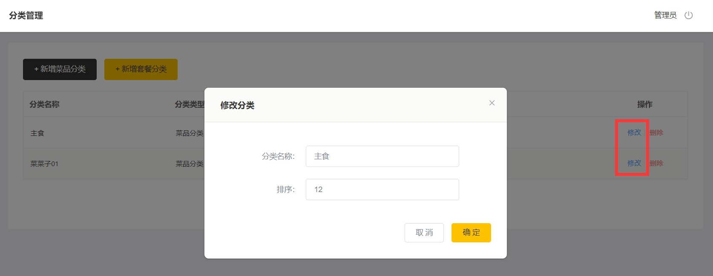
11.2 前端分析
数据回显
<el-button
type="text"
size="small"
class="blueBug"
@click="editHandle(scope.row)"
>
修改
</el-button>
editHandle(dat) {
this.classData.title = '修改分类'
this.action = 'edit'
this.classData.name = dat.name
this.classData.sort = dat.sort
this.classData.id = dat.id
this.classData.dialogVisible = true
}
classData: {
'title': '添加菜品分类',
'dialogVisible': false,
'categoryId': '',
'name': '',
sort: ''
}
// 数据双向绑定，回显
<el-form
class="demo-form-inline"
label-width="100px"
>
<el-form-item label="分类名称：">
<el-input
v-model="classData.name" //这里
placeholder="请输入分类名称"
maxlength="14"
/>
</el-form-item>
<el-form-item label="排序：">
<el-input v-model="classData.sort" type="number" placeholder="请输入排序" /> //这里
</el-form-item>
</el-form>数据提交是采用的一个通用的submitForm函数，由于我们是修改操作，所以直接从else开始往后看就行了
//数据提交
submitForm(st) {
const classData = this.classData
const valid = (classData.name === 0 ||classData.name) && (classData.sort === 0 || classData.sort)
if (this.action === 'add') {
if (valid) {
const reg = /^\d+$/
if (reg.test(classData.sort)) {
addCategory({'name': classData.name,'type':this.type, sort: classData.sort}).then(res => {
console.log(res)
if (res.code === 1) {
this.$message.success('分类添加成功！')
if (!st) {
this.classData.dialogVisible = false
} else {
this.classData.name = ''
this.classData.sort = ''
}
this.handleQuery()
} else {
this.$message.error(res.msg || '操作失败')
}
}).catch(err => {
this.$message.error('请求出错了：' + err)
})
} else {
this.$message.error('排序只能输入数字类型')
}
} else {
this.$message.error('请输入分类名称或排序')
}
} else if (valid) {
const reg = /^\d+$/
if (reg.test(this.classData.sort)) {
editCategory({'id':this.classData.id,'name': this.classData.name, sort: this.classData.sort}).then(res => {
if (res.code === 1) {
this.$message.success('分类修改成功！')
this.classData.dialogVisible = false
this.handleQuery()
} else {
this.$message.error(res.msg || '操作失败')
}
}).catch(err => {
this.$message.error('请求出错了：' + err)
})
} else {
this.$message.error('排序只能输入数字类型')
}
} else {
this.$message.error('请输入分类名称或排序')
}
}
// 修改接口
const editCategory = (params) => {
return $axios({
url: '/category',
method: 'put',
data: { ...params }
})
}11.3 代码实现
@PutMapping
public Result<String> update(@RequestBody Category category) {
log.info("修改分类信息为：{}", category);
categoryService.updateById(category);
return Result.success("修改分类信息成功");
}菜品管理
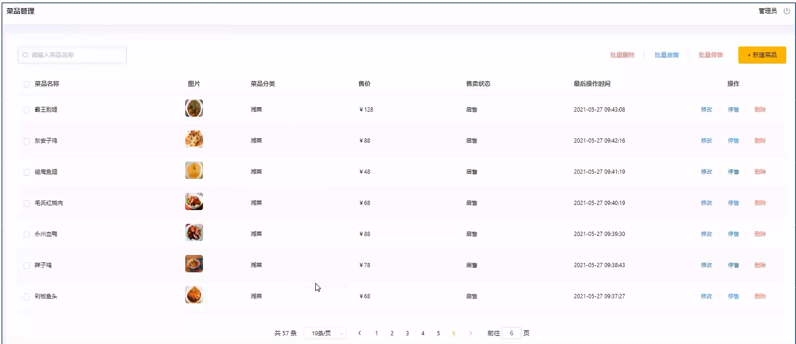
12. 文件上传与下载
12.1 文件上传简介
文件上传，也叫upload，是指将本地图片、视频、音频等文件上传到服务器中，可以供其他用户浏览或下载的过程
文件上传时，对页面的form表单有如下要求：
method="post"，采用post方式提交数据enctype="multipart/form-data"，采用multipart格式上传文件type="file"，使用input的file控件上传
目前一些前端组件库也提供了相应的上传组件，但是底层原理还是基于form表单的文件上传，这里我们就用提供好的组件就行了
我们把这段代码放在backend/demo目录下，命名为upload.html
<!DOCTYPE html>
<html lang="en">
<head>
<meta charset="UTF-8">
<meta http-equiv="X-UA-Compatible" content="IE=edge">
<meta name="viewport" content="width=device-width, initial-scale=1.0">
<title>文件上传</title>
<!-- 引入样式 -->
<link rel="stylesheet" href="../../plugins/element-ui/index.css" />
<link rel="stylesheet" href="../../styles/common.css" />
<link rel="stylesheet" href="../../styles/page.css" />
</head>
<body>
<div class="addBrand-container" id="food-add-app">
<div class="container">
<el-upload class="avatar-uploader"
action="/common/upload"
:show-file-list="false"
:on-success="handleAvatarSuccess"
:before-upload="beforeUpload"
ref="upload">
<img v-if="imageUrl" :src="imageUrl" class="avatar"></img>
<i v-else class="el-icon-plus avatar-uploader-icon"></i>
</el-upload>
</div>
</div>
<!-- 开发环境版本，包含了有帮助的命令行警告 -->
<script src="../../plugins/vue/vue.js"></script>
<!-- 引入组件库 -->
<script src="../../plugins/element-ui/index.js"></script>
<!-- 引入axios -->
<script src="../../plugins/axios/axios.min.js"></script>
<script src="../../js/index.js"></script>
<script>
new Vue({
el: '#food-add-app',
data() {
return {
imageUrl: ''
}
},
methods: {
handleAvatarSuccess (response, file, fileList) {
this.imageUrl = `/common/download?name=${response.data}`
},
beforeUpload (file) {
if(file){
const suffix = file.name.split('.')[1]
const size = file.size / 1024 / 1024 < 2
if(['png','jpeg','jpg'].indexOf(suffix) < 0){
this.$message.error('上传图片只支持 png、jpeg、jpg 格式！')
this.$refs.upload.clearFiles()
return false
}
if(!size){
this.$message.error('上传文件大小不能超过 2MB!')
return false
}
return file
}
}
}
})
</script>
</body>
</html>- 服务端要接收客户端页面上传的文件，通常都会使用Apache的两个组件:
commons-fileuploadcommons-io
- Spring框架在spring-web包中对文件上传进行了封装，大大简化了服务端代码，我们只需要在Controller的方法中声明一个MultipartFile类型的参数即可接收上传的文件，例如
@RestController
@RequestMapping("/common")
@Slf4j
public class CommonController {
@PostMapping("/upload")
public Result<String> upload(MultipartFile file) {
log.info("获取文件：{}", file.toString());
return null;
}
}12.2 文件下载简介
- 文件下载，也成为了download，是指将文件从服务器传输到本地计算机的过程
- 通过浏览器进行文件下载，通常有两种表现形式
- 以附件形式下载，弹出保存对话框，将文件保存到指定磁盘目录
- 直接在浏览器中打开
- 通过浏览器进行文件下载，本质上就是服务端将文件以流的形式写回浏览器的过程
12.3 文件上传代码实现
将我们上传的临时文件转存到指定位置
文件转存的位置改为动态可配置的，通过配置文件的方式指定，我们在application.yml文件中加入以下内容
reggie: path: D:\\reggie\\imgs\\- 使用 @Value(“${reggie.path}”)读取到配置文件中的动态转存位置 - 使用uuid方式重新生成文件名，避免文件名重复造成文件覆盖 - 通过获取原文件名来截取文件后缀 ```java @RestController @RequestMapping("/common") @Slf4j public class CommonController { //导入yml中配置的属性 @Value("${reggie.path}") private String basepath; @PostMapping("/upload") //file是个临时文件，我们在断点调试的时候可以看到，但是执行完整个方法之后就消失了 public Result<String> upload(MultipartFile file) { log.info("获取文件：{}", file.toString()); //判断一下当前目录是否存在，不存在则创建 File dir = new File(basepath); if (!dir.exists()) { dir.mkdirs(); } //获取一下传入的原文件名 String originalFilename = file.getOriginalFilename(); //我们只需要获取一下格式后缀，取子串，起始点为最后一个. String suffix = originalFilename.substring(originalFilename.lastIndexOf(".")); //为了防止出现重复的文件名，我们需要使用UUID String fileName = UUID.randomUUID() + suffix; try { //我们将其转存到我们的指定目录下 file.transferTo(new File(basepath + fileName)); } catch (IOException e) { throw new RuntimeException(e); } //将文件名返回给前端，便于后期的开发 return Result.success(fileName); } }
12.4 文件下载代码实现
- 前端页面的ElementUI的upload组件会在上传完图片后，触发img组件发送请求，服务端以流的方式（输出流）将文件写回给浏览器，在浏览器中展示图片
<el-upload class="avatar-uploader"
action="/common/upload"
:show-file-list="false"
:on-success="handleAvatarSuccess"
:before-upload="beforeUpload"
ref="upload">
<img v-if="imageUrl" :src="imageUrl" class="avatar"></img>
<i v-else class="el-icon-plus avatar-uploader-icon"></i>
</el-upload>- 定义前端发送回显图片请求的地址
通过这个url我们可以看出，请求路径为/common/download，且发送的是GET请求
handleAvatarSuccess (response, file, fileList) {
this.imageUrl = `/common/download?name=${response.data}`
}13. 新增菜品
13.1 需求分析
- 后台系统中可以管理菜品信息，通过新增功能来添加一个新的菜品
- 在添加菜品时需要选择当前菜品所属的菜品分类，并且需要上传当前的菜品图片
- 在移动端会按照菜品分类来展示对应的菜品信息（前端的活儿，跟咱没啥太大关系）
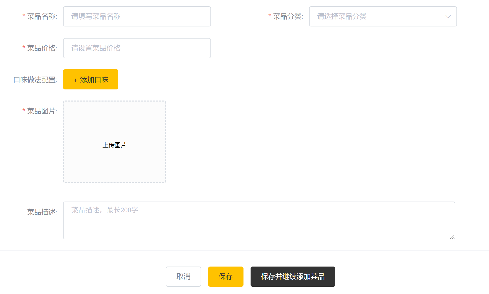
13.2 数据模型
dish表，最后一条字段is_deleted是逻辑删除
| Field | Type | Collation | Null | Key | Default | Comment |
|---|---|---|---|---|---|---|
| id | bigint | (NULL) | NO | PRI | (NULL) | 主键 |
| name | varchar(64) | utf8_bin | NO | UNI | (NULL) | 菜品名称 |
| category_id | bigint | (NULL) | NO | (NULL) | 菜品分类id | |
| price | decimal(10,2) | (NULL) | YES | (NULL) | 菜品价格 | |
| code | varchar(64) | utf8_bin | NO | (NULL) | 商品码 | |
| image | varchar(200) | utf8_bin | NO | (NULL) | 图片 | |
| description | varchar(400) | utf8_bin | YES | (NULL) | 描述信息 | |
| status | int | (NULL) | NO | 1 | 0 停售 1 起售 | |
| sort | int | (NULL) | NO | 0 | 顺序 | |
| create_time | datetime | (NULL) | NO | (NULL) | 创建时间 | |
| update_time | datetime | (NULL) | NO | (NULL) | 更新时间 | |
| create_user | bigint | (NULL) | NO | (NULL) | 创建人 | |
| update_user | bigint | (NULL) | NO | (NULL) | 修改人 | |
| is_deleted | int | (NULL) | NO | 0 | 是否删除 |
dish_flavor表
| Field | Type | Collation | Null | Key | Default | Comment |
|---|---|---|---|---|---|---|
| id | bigint | (NULL) | NO | PRI | (NULL) | 主键 |
| dish_id | bigint | (NULL) | NO | (NULL) | 菜品 | |
| name | varchar(64) | utf8_bin | NO | (NULL) | 口味名称 | |
| value | varchar(500) | utf8_bin | YES | (NULL) | 口味数据list | |
| create_time | datetime | (NULL) | NO | (NULL) | 创建时间 | |
| update_time | datetime | (NULL) | NO | (NULL) | 更新时间 | |
| create_user | bigint | (NULL) | NO | (NULL) | 创建人 | |
| update_user | bigint | (NULL) | NO | (NULL) | 修改人 | |
| is_deleted | int | (NULL) | NO | 0 | 是否删除 |
13.3 代码开发
梳理交互过程
按照惯例，在开发代码之前，我们先来梳理一下整个流程
- 页面（backend/page/food/add.html）发送ajax请求，请求服务端获取菜品分类数据并展示到下拉框中
- 页面发送请求进行图片上传，请求服务端将图片保存到服务器
- 页面发送请求进行图片下载，并回显上传的图片
- 点击保存按钮，发送ajax请求，将菜品相关数据以json形式提交到服务端
所以开发新增菜品功能，其实就是在服务端编写代码去处理前端发送的这4次请求即可
查询菜品分类数据
- 前端分析
created() {
this.getDishList()
// 口味临时数据
this.getFlavorListHand()
this.id = requestUrlParam('id')
this.actionType = this.id ? 'edit' : 'add'
if (this.id) {
this.init()
}
}
getDishList () {
getCategoryList({ 'type': 1 }).then(res => {
if (res.code === 1) {
this.dishList = res.data
} else {
this.$message.error(res.msg || '操作失败')
}
})
}
// 获取菜品分类列表
const getCategoryList = (params) => {
return $axios({
url: '/category/list',
method: 'get',
params
})
}
//下拉框
<el-select
v-model="ruleForm.categoryId"
placeholder="请选择菜品分类"
>
<el-option v-for="(item,index) in dishList" :key="index" :label="item.name" :value="item.id" />
</el-select>- 后端实现
在CategoryController类中，添加list方法
我们只需要发送get请求，将数据返回给前端即可，操作很简单
@GetMapping("/list")
public Result<List<Category>> list(Category category) {
//条件构造器
LambdaQueryWrapper<Category> queryWrapper = new LambdaQueryWrapper<>();
//添加条件，这里只需要判断是否为菜品（type为1是菜品，type为2是套餐）
queryWrapper.eq(category.getType() != null,Category::getType,category.getType());
//添加排序条件
queryWrapper.orderByAsc(Category::getSort).orderByDesc(Category::getUpdateTime);
//查询数据
List<Category> list = categoryService.list(queryWrapper);
//返回数据
return Result.success(list);
}接收与回显图片
这个功能再刚刚我们已经实现了，到现在可以直接用
提交数据到服务端
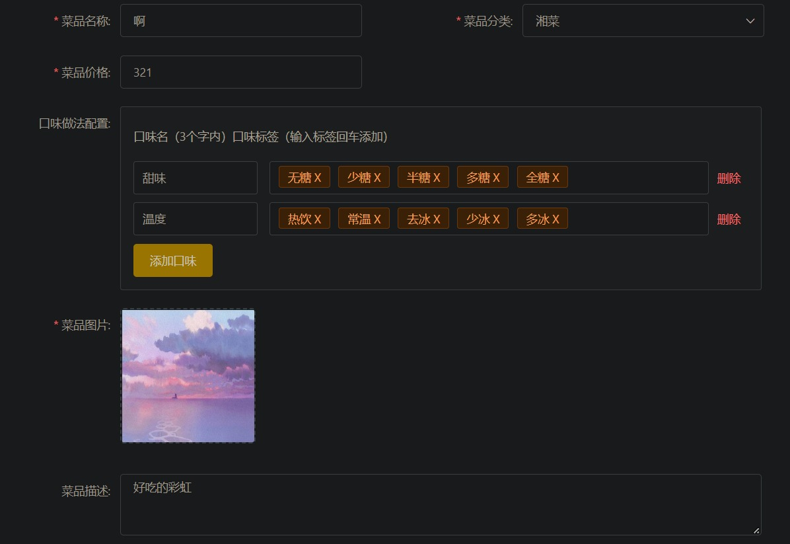
- 接收数据分析
{name: "啊", price: 32100, code: "", image: "1eefc77c-12b6-4cd0-8e6e-347d8f92ae84.jpg",…}
categoryId:"1397844263642378242"
code:""
description:"好吃的彩虹"
flavors:[{name: "甜味", value: "["无糖","少糖","半糖","多糖","全糖"]", showOption: false},…]
0:{name: "甜味", value: "["无糖","少糖","半糖","多糖","全糖"]", showOption: false}
1:{name: "温度", value: "["热饮","常温","去冰","少冰","多冰"]", showOption: false}
image:"1eefc77c-12b6-4cd0-8e6e-347d8f92ae84.jpg"
name:"啊"
price:32100
status:1- 因为Dish实体类无法接收flavor参数，即需要导入DishDto，用于封装页面提交的数据
- DTO，全称为
Data Transfer Object，即数据传输对象，一般用于展示层与服务层之间的数据传输。
@Data
public class DishDto extends Dish {
private List<DishFlavor> flavors = new ArrayList<>();
//后面这两条属性暂时没用，这里只需要用第一条属性
private String categoryName;
private Integer copies;
}- 前端分析
submitForm(formName, st) {
this.$refs[formName].validate((valid) => {
if (valid) {
let params = {...this.ruleForm}
// params.flavors = this.dishFlavors
params.status = this.ruleForm ? 1 : 0
params.price *= 100
params.categoryId = this.ruleForm.categoryId
params.flavors = this.dishFlavors.map(obj => ({ ...obj, value: JSON.stringify(obj.value) }))
delete params.dishFlavors
if(!this.imageUrl){
this.$message.error('请上传菜品图片')
return
}
if (this.actionType == 'add') {
delete params.id
addDish(params).then(res => {
if (res.code === 1) {
this.$message.success('菜品添加成功！') //这里
if (!st) {
this.goBack()
} else {
this.dishFlavors = []
// this.dishFlavorsData = []
this.imageUrl = ''
this.ruleForm = {
'name': '',
'id': '',
'price': '',
'code': '',
'image': '',
'description': '',
'dishFlavors': [],
'status': true,
categoryId: ''
}
}
} else {
this.$message.error(res.msg || '操作失败')
}
}).catch(err => {
this.$message.error('请求出错了：' + err)
})
} else {
delete params.updateTime
editDish(params).then(res => {
if (res.code === 1) {
this.$message.success('菜品修改成功！')
this.goBack()
} else {
this.$message.error(res.msg || '操作失败')
}
}).catch(err => {
this.$message.error('请求出错了：' + err)
})
}
} else {
return false
}
})
}
// 新增接口
const addDish = (params) => {
return $axios({
url: '/dish',
method: 'post',
data: { ...params }
})
}- 后端实现
在DishController类中添加save方法，重启服务器，断点调试一下看看是否封装好了数据
@PostMapping
public Result<String> save(@RequestBody DishDto dishDto) {
log.info("接收到的数据为：{}",dishDto);
return null;
}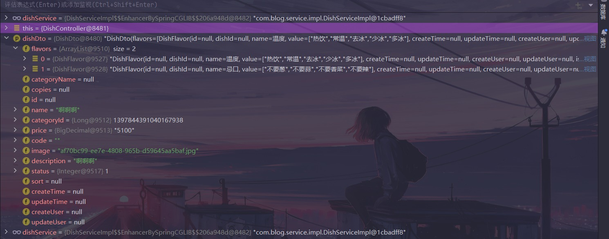
从图中我们可以看出，DishFlavor 中的 dishId 为 null
但是我们需要对 DishFlavor 中的 dishId 进行赋值
所以我们要取出 dishDto 的 dishId，然后对每一组 flavor 的 dishId 赋值
- 这里进行一下小结，我们需要做的有以下几点
- 将菜品数据保存到
dish表 - 将菜品口味数据保存到
dish_flavor表- 但是
dish_flavor表中需要一个dishId字段值，这个字段值需要我们从dishDto中获取 - 获取方式为：取出
dishDto的dishId，对每一组flavor的dishId赋值
- 但是
- 将菜品数据保存到
- 梳理完毕之后，那么我们就在
DishFlavorService中编写一个saveWithFlavor方法
public interface DishService extends IService<Dish> {
void saveWithFlavor(DishDto dishDto);
}- 同时在
DishFlavorServiceImpl中重写方法
@Service
public class DishServiceImpl extends ServiceImpl<DishMapper, Dish> implements DishService {
@Autowired
private DishFlavorService dishFlavorService;
@Override
@Transactional // 涉及多表联查，开启事务管理，同时需要在启动类上加入@EnableTransactionManagement
public void saveWithFlavor(DishDto dishDto) {
//将菜品数据保存到dish表
this.save(dishDto);
//获取dishId
Long dishId = dishDto.getId();
//将获取到的dishId赋值给dishFlavor的dishId属性
List<DishFlavor> flavors = dishDto.getFlavors();
for (DishFlavor dishFlavor : flavors) {
dishFlavor.setDishId(dishId);
}
//同时将菜品口味数据保存到dish_flavor表
dishFlavorService.saveBatch(flavors);
}
}14. 菜品信息分页查询
14.1 需求分析
- 系统中的菜品数据很多的时候，如果在一个页面中全部展示出来会显得比较乱，不便于查看
- 所以一般的系统中都会以分页的方式来展示列表数据。
- 其中图片列和菜品分类列比较特殊
- 图片列：会用到文件的下载功能
- 菜品分类列：由于我们的菜品表只保存了category_id，所以我们需要查询category_id对应的菜品分类名称，从而回显数据
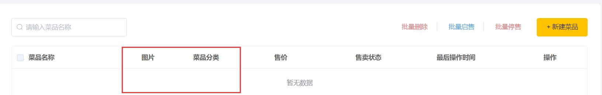
14.2 梳理交互过程
按照惯例，我们还是先来梳理一遍流程
- 页面(backend/page/food/list.html)发送ajax请求，将分页查询参数(
page、pageSize、name)，提交到服务端，获取分页数据 - 页面发送请求，请求服务端进行图片下载，用于页面图片展示
那么开发菜品信息分页查询功能，其实就是在服务端编写代码去处理前端页面发送的这2次请求即可
14.3 代码开发
- 在
DishController下添加page方法，进行分页查询
@GetMapping("/page")
public Result<Page> page(int page, int pageSize, String name) {
//构造分页构造器对象
Page<Dish> pageInfo = new Page<>(page, pageSize);
//条件构造器
LambdaQueryWrapper<Dish> queryWrapper = new LambdaQueryWrapper<>();
//添加条件
queryWrapper.like(name != null, Dish::getName, name);
queryWrapper.orderByDesc(Dish::getUpdateTime);
//执行分页查询
dishService.page(pageInfo, queryWrapper);
return Result.success(pageInfo);
}- 由于有菜品分类数据
- 我们传递的是一个Dish对象，dish对象没有菜品分类名称属性，但是有菜品分类id
- 那我们就可以根据这个菜品分类id，去菜品分类表中查询对应的菜品分类名称
- 所以我们之前的DishDto类中的另外一个属性就派上用场了，我们返回一个DishDto对象就有菜品分类名称数据了
@GetMapping("/page")
public Result<Page> page(int page, int pageSize, String name) {
//构造分页构造器对象
Page<Dish> pageInfo = new Page<>(page, pageSize);
//这个就是我们到时候返回的结果
Page<DishDto> dishDtoPage = new Page<>(page, pageSize);
//条件构造器
LambdaQueryWrapper<Dish> queryWrapper = new LambdaQueryWrapper<>();
//添加条件
queryWrapper.like(name != null, Dish::getName, name);
queryWrapper.orderByDesc(Dish::getUpdateTime);
//执行分页查询
dishService.page(pageInfo, queryWrapper);//结果为pageInfo
//对象拷贝，这里只需要拷贝一下查询到的条目数
BeanUtils.copyProperties(pageInfo, dishDtoPage, "records");// 忽略结果数据集records
//获取原records数据
List<Dish> records = pageInfo.getRecords();
//遍历records的每一条Dish数据，为categoryName赋值，封装成DishDto数据
List<DishDto> list = records.stream().map((item) -> {
DishDto dishDto = new DishDto();
//将数据赋给dishDto对象
BeanUtils.copyProperties(item, dishDto);
//然后获取一下dish对象的category_id属性
Long categoryId = item.getCategoryId(); //分类id
//根据这个属性，获取到Category对象（这里需要用@Autowired注入一个CategoryService对象）
Category category = categoryService.getById(categoryId);
//随后获取Category对象的name属性，也就是菜品分类名称
String categoryName = category.getName();
//最后将菜品分类名称赋给dishDto对象就好了
dishDto.setCategoryName(categoryName);
//结果返回一个dishDto对象
return dishDto;
//并将dishDto对象封装成一个集合，作为我们的最终结果
}).collect(Collectors.toList());
dishDtoPage.setRecords(list);
return Result.success(dishDtoPage);
}15. 修改菜品
15.1 梳理交互过程
按照惯例，还是先来梳理一下整个流程
- 页面发送ajax请求，请求服务器获取分类数据，用于菜品分类下拉框的数据回显（之前我们已经实现过了）
- 页面发送ajax请求，请求服务端，根据id查询当前菜品信息，用于菜品信息回显
- 页面发送请求，请求服务端进行图片下载，用于页面图片回显（之前我们已经实现过了）
- 点击保存按钮，页面发送ajax请求，将修改后的菜品相关数据以json形式提交到服务端
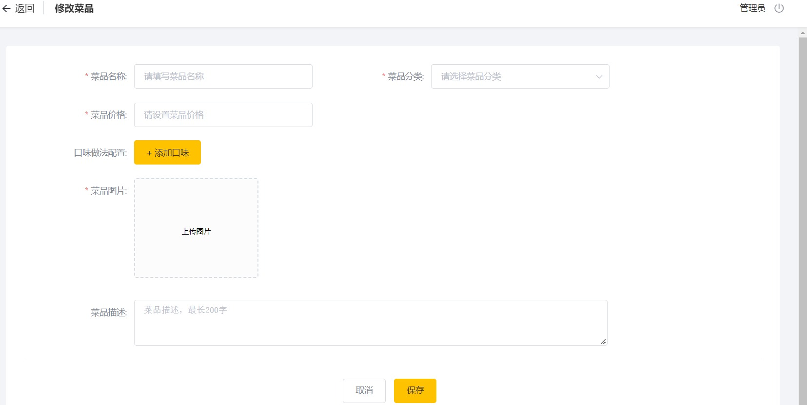
15.2 查询菜品信息
- 菜品信息回显功能，需要我们先根据id来查询到对应的菜品信息才能回显
- 但修改表单中有一个菜品口味属性，普通的Dish类没有这个属性，所以还是要用到DishDto
- 那我们这里先在 DishServiceImpl 中编写一个
getByIdWithFlavor方法 - 菜品口味需要根据
dish_id去dish_flavor表中查询，将查询到的菜品口味数据赋给我们的DishDto对象即可
@Override
public DishDto getByIdWithFlavor(Long id) {
//先根据id查询到对应的dish对象
Dish dish = this.getById(id);
//创建一个dishDao对象
DishDto dishDto = new DishDto();
//拷贝对象
BeanUtils.copyProperties(dish, dishDto);
//条件构造器，对DishFlavor表查询
LambdaQueryWrapper<DishFlavor> queryWrapper = new LambdaQueryWrapper<>();
//根据dish_id来查询对应的菜品口味数据
queryWrapper.eq(DishFlavor::getDishId, id);
//获取查询的结果
List<DishFlavor> flavors = dishFlavorService.list(queryWrapper);
//并将其赋给dishDto
dishDto.setFlavors(flavors);
//作为结果返回给前端
return dishDto;
}- 在
DishController中添加get方法，实现添加在DishServicelmpl中的逻辑代码，返回查询到的数据信息
@GetMapping("/{id}")
public Result<DishDto> getByIdWithFlavor(@PathVariable Long id) {
DishDto dishDto = dishService.getByIdWithFlavor(id);
log.info("查询到的数据为：{}", dishDto);
return Result.success(dishDto);
}15.3 修改菜品信息
由于Dish表中没有Flavor这个属性，所以修改的时候，我们也是需要修改两张表
首先去DishService中创建updateWithFlavor方法，然后在DishServiceImpl中重写方法
- 根据
id修改菜品的基本信息 - 通过
dish_id,删除菜品的flavor - 获取前端提交的
flavor数据 - 为条
flavor的dishId属性赋值 - 将数据批量保存到
dish_flavor数据库
@Override
@Transactional
public void updateWithFlavor(DishDto dishDto) {
//更新当前菜品数据（dish表）
this.updateById(dishDto);
//下面是更新当前菜品的口味数据
//条件构造器
LambdaQueryWrapper<DishFlavor> queryWrapper = new LambdaQueryWrapper<>();
//条件是当前菜品id
queryWrapper.eq(DishFlavor::getDishId, dishDto.getId());
//将其删除掉
dishFlavorService.remove(queryWrapper);
//获取传入的新的口味数据
List<DishFlavor> flavors = dishDto.getFlavors();
//这些口味数据还是没有dish_id，所以需要赋予其dishId
flavors = flavors.stream().map((item) -> {
item.setDishId(dishDto.getId());
return item;
}).collect(Collectors.toList());
//再重新加入到表中
dishFlavorService.saveBatch(flavors);
}@PutMapping
public Result<String> update(@RequestBody DishDto dishDto) {
log.info("接收到的数据为：{}", dishDto);
dishService.updateWithFlavor(dishDto);
return Result.success("修改菜品成功");
}套餐管理
16. 新增套餐
16.1 需求分析
- 套餐就是菜品的集合
- 后台系统中可以管理套餐信息，通过新增套餐来添加一个新的套餐
- 在添加套餐时需要选择当前套餐所属的套餐分类和包含的菜品，并且需要上传套餐对应的图片
16.2 数据模型
- 新增套餐，其实就是将新增页面录入的套餐信息插入到setmeal表中，而且还要向setmeal_dish表中插入套餐和菜品关联数据
- 所以在新增套餐时，需要对两张表进行操作
- setmeal表 –> 套餐表
- setmeal_dish表 –> 套餐菜品关系表
- setmeal表
| Field | Type | Collation | Null | Key | Default | Comment |
|---|---|---|---|---|---|---|
| id | bigint | (NULL) | NO | PRI | (NULL) | 主键 |
| category_id | bigint | (NULL) | NO | (NULL) | 菜品分类id | |
| name | varchar(64) | utf8_bin | NO | UNI | (NULL) | 套餐名称 |
| price | decimal(10,2) | (NULL) | NO | (NULL) | 套餐价格 | |
| status | int | (NULL) | YES | (NULL) | 状态 0:停用 1:启用 | |
| code | varchar(32) | utf8_bin | YES | (NULL) | 编码 | |
| description | varchar(512) | utf8_bin | YES | (NULL) | 描述信息 | |
| image | varchar(255) | utf8_bin | YES | (NULL) | 图片 | |
| create_time | datetime | (NULL) | NO | (NULL) | 创建时间 | |
| update_time | datetime | (NULL) | NO | (NULL) | 更新时间 | |
| create_user | bigint | (NULL) | NO | (NULL) | 创建人 | |
| update_user | bigint | (NULL) | NO | (NULL) | 修改人 | |
| is_deleted | int | (NULL) | NO | 0 | 是否删除 |
- setmeal_dish表
| Field | Type | Collation | Null | Key | Default | Comment |
|---|---|---|---|---|---|---|
| id | bigint | (NULL) | NO | PRI | (NULL) | 主键 |
| setmeal_id | varchar(32) | utf8_bin | NO | (NULL) | 套餐id | |
| dish_id | varchar(32) | utf8_bin | NO | (NULL) | 菜品id | |
| name | varchar(32) | utf8_bin | YES | (NULL) | 菜品名称 （冗余字段） | |
| price | decimal(10,2) | (NULL) | YES | (NULL) | 菜品原价（冗余字段） | |
| copies | int | (NULL) | NO | (NULL) | 份数 | |
| sort | int | (NULL) | NO | 0 | 排序 | |
| create_time | datetime | (NULL) | NO | (NULL) | 创建时间 | |
| update_time | datetime | (NULL) | NO | (NULL) | 更新时间 | |
| create_user | bigint | (NULL) | NO | (NULL) | 创建人 | |
| update_user | bigint | (NULL) | NO | (NULL) | 修改人 | |
| is_deleted | int | (NULL) | NO | 0 | 是否删除 |
16.3 梳理交互过程
在开发代码之前，我们先来梳理一下新增套餐时前端页面与服务端的交互过程
- 页面发送ajax请求，请求服务端，获取套餐分类数据并展示到下拉框中（这个之前做过）
- 页面发送ajax请求，请求服务端，获取菜品分类数据并展示到添加菜品窗口中
- 页面发送ajax请求，请求服务端，根据菜品分类查询对应的菜品数据并展示到添加菜品窗口中
- 页面发送请求进行图片上传，请求服务端将图片保存到服务器（已完成）
- 页面发送请求进行图片下载，将上传的图片进行回显（已完成）
- 点击保存按钮，发送ajax请求，将套餐相关数据以json形式提交到服务端
开发新增套餐功能，其实就是在服务端编写代码去处理前端页面发送的这6次请求
16.4 代码开发
新增套餐页面，现在的套餐分类下拉框中已经能显示套餐分类了，这个功能在之前我们已经实现过了
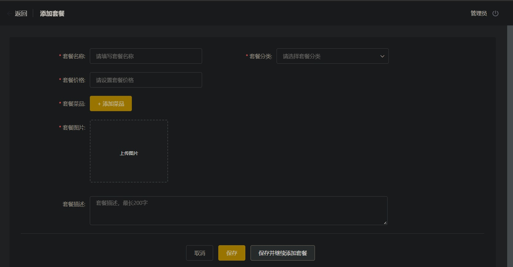
- 添加菜品页面，这个页面是发送的GET请求，且路径为
dish/list?categoryId=xxx
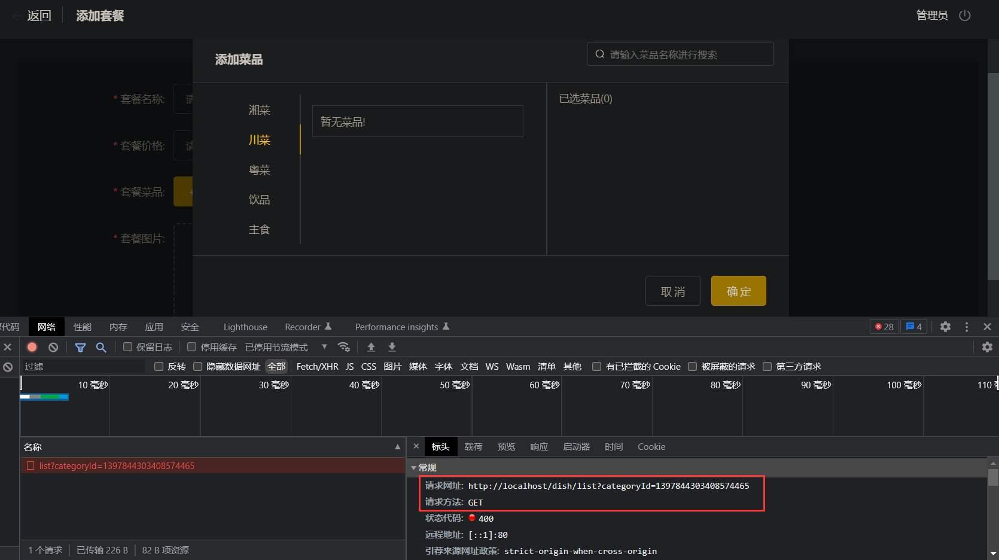
- 所以我们先去DishController中编写对应的get方法来正确显示菜品数据
@GetMapping("/list")
public Result<List<Dish>> get(Dish dish) {
//条件查询器
LambdaQueryWrapper<Dish> queryWrapper = new LambdaQueryWrapper<>();
//根据传进来的categoryId查询
queryWrapper.eq(dish.getCategoryId() != null, Dish::getCategoryId, dish.getCategoryId());
//只查询状态为1的菜品（启售菜品）
queryWrapper.eq(Dish::getStatus, 1);
//简单排下序，其实也没啥太大作用
queryWrapper.orderByAsc(Dish::getSort).orderByDesc(Dish::getUpdateTime);
//获取查询到的结果作为返回值
List<Dish> list = dishService.list(queryWrapper);
return Result.success(list);
}- 编写save方法
我们先打个断点，看看提交的数据是啥样的
@PostMapping
public Result<String> save(@RequestBody SetmealDto setmealDto) {
log.info("套餐信息：{}", setmealDto);
return Result.success("套餐添加成功");
}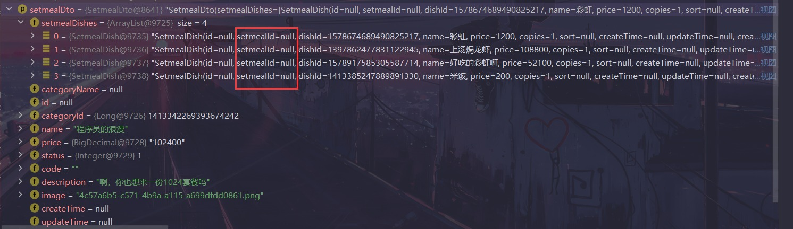
需要注意的是这个setmealId为null，我们具体的代码中，要对其进行赋值
- 具体业务逻辑如下
@PostMapping
public Result<String> save(@RequestBody SetmealDto setmealDto) {
log.info("套餐信息：{}", setmealDto);
setmealService.saveWithDish(setmealDto);
return Result.success("套餐添加成功");
}@Service
public class SetmealServiceImpl extends ServiceImpl<SetmealMapper, Setmeal> implements SetmealService {
@Autowired
protected SetmealDishService setmealDishService;
@Override
public void saveWithDish(SetmealDto setmealDto) {
//保存套餐setmeal基本信息
this.save(setmealDto);
List<SetmealDish> setmealDishes = setmealDto.getSetmealDishes();
setmealDishes = setmealDishes.stream().map((item) -> {
item.setSetmealId(setmealDto.getId());
return item;
}).collect(Collectors.toList());
//保存套餐和菜品关联信息到setmeal_dish
setmealDishService.saveBatch(setmealDishes);
}
}17. 套餐信息分页查询
17.1 需求分析
- 系统中的套餐数据很多的时候，如果在一个页面中全部展示出来会显得比较乱，不便于查看
- 一般的系统中都会以分页的方式来展示列表数据
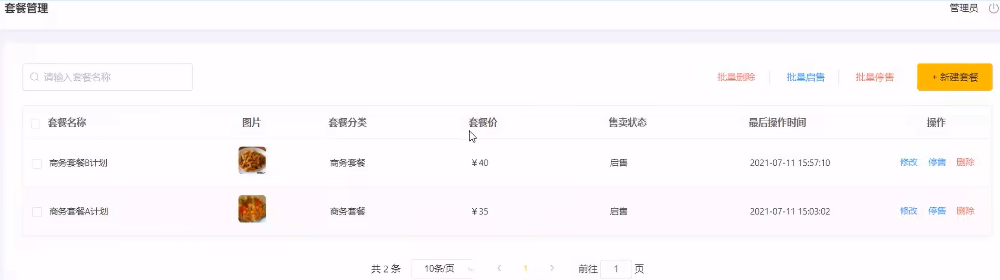
17.2 梳理交互过程
- 页面发送ajax请求，将分页查询参数（page，pageSize，name）提交到服务端，获取分页数据
- 页面发送请求，请求服务端进行图片下载，用于页面图片展示（已完成）
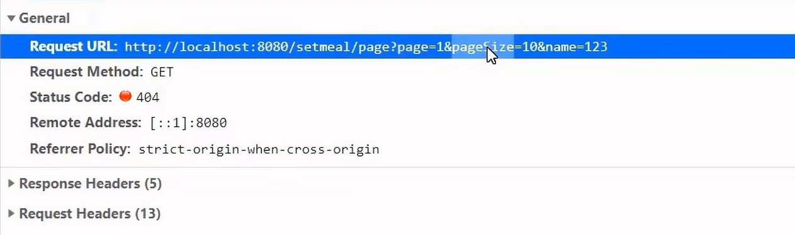
17.3 代码开发
- SetmealController类中，添加list方法
其实跟前面的菜品信息分页查询代码几乎一模一样，这遍就当review了
@GetMapping("/page")
public Result<Page> page(int page, int pageSize, String name) {
Page<Setmeal> pageInfo = new Page<>(page, pageSize);
Page<SetmealDto> dtoPage = new Page<>(page, pageSize);
LambdaQueryWrapper<Setmeal> queryWrapper = new LambdaQueryWrapper<>();
queryWrapper.like(name != null, Setmeal::getName, name);
queryWrapper.orderByDesc(Setmeal::getUpdateTime);
setmealService.page(pageInfo, queryWrapper);
// 通过categoryId查询categoryName
BeanUtils.copyProperties(pageInfo, dtoPage, "records");
List<Setmeal> records = pageInfo.getRecords();
List<SetmealDto> list = records.stream().map((item) -> {
SetmealDto setmealDto = new SetmealDto();
BeanUtils.copyProperties(item, setmealDto);
Long categoryId = item.getCategoryId();
Category category = categoryService.getById(categoryId);
if (category != null) {
setmealDto.setCategoryName(category.getName());
}
return setmealDto;
}).collect(Collectors.toList());
dtoPage.setRecords(list);
return Result.success(dtoPage);
}18. 删除套餐
18.1 需求分析
- 在套餐管理列表页面点击删除按钮，可以删除对应的套餐信息
- 也可以通过复选框选择多个套餐，选择批量删除一次性删除多个套餐
注意：对于在售中的套餐不能删除，需要先停售，然后才能删除
18.2 梳理交互过程
- 删除单个套餐时，页面发送ajax请求，根据套餐id删除对应套餐
- 删除多个套餐时，页面发送ajax请求，根据提交的多个套餐id删除对应套餐开发删除套餐功能
- 请求网址: http://localhost/setmeal?ids=1579044544635232258,1415580119015145474
- 请求方法: DELETE
- 删除单个套餐和批量删除这两种请求的地址和请求方式都是相同的
- 不同的则是传递的id个数，所以在服务端可以提供一个方法来统一处理。
18.3 代码开发
- 在SetmealController中添加delete方法
@DeleteMapping
public Result<String> deleteByIds(@RequestParam List<Long> ids) {
log.info("要删除的套餐id为：{}",ids);
setmealService.removeWithDish(ids);
return Result.success("删除成功");
}- 在
SetmealServiceImpl中重写方法
@Override
@Transactional
public void removeWithDish(List<Long> ids) {
//先判断一下能不能删，如果status为1，则套餐在售，不能删
//select * from setmeal where id in (ids) and status = 1
LambdaQueryWrapper<Setmeal> setmealLambdaQueryWrapper = new LambdaQueryWrapper<>();
setmealLambdaQueryWrapper.in(Setmeal::getId, ids);
setmealLambdaQueryWrapper.eq(Setmeal::getStatus, 1);
int count = this.count(setmealLambdaQueryWrapper);
if (count > 0) {
throw new CustomException("套餐正在售卖中，请先停售再进行删除");
}
//如果没有在售套餐，则直接删除
this.removeByIds(ids);
//继续删除
LambdaQueryWrapper<SetmealDish> setmealDishLambdaQueryWrapper = new LambdaQueryWrapper<>();
setmealDishLambdaQueryWrapper.in(SetmealDish::getSetmealId, ids);
setmealDishService.remove(setmealDishLambdaQueryWrapper);
}用户端操作
19. 邮件发送（替换手机验证）
其实黑马这里用的是短信业务，但咱也没那条件，所以我只能自己换成QQ邮箱验证码了，这个简单，具体操作我们也只需要开启POP3/STMP服务，获取一个16位的授权码：oblbemkgmircebfj
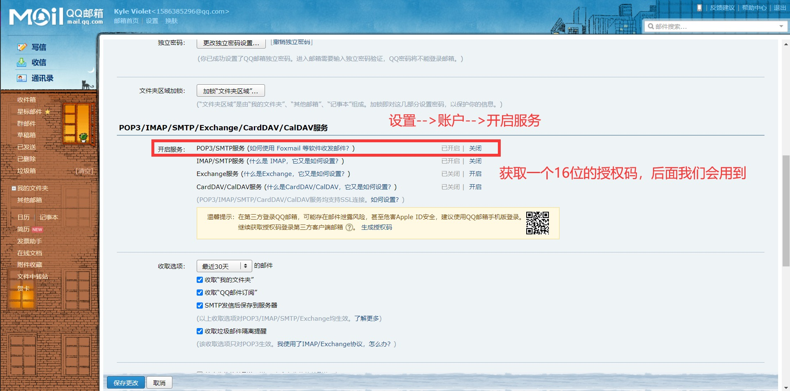
19.1 需求分析
- 为了方便用户登录，移动端通常都会提供通过手机验证码登录的功能(咱平替成邮箱验证码)
- 手机（邮箱）验证码登录的优点：
- 方便快捷，无需注册，直接登录
- 使用短信验证码作为登录凭证，无需记忆密码
- 安全
- 登录流程:
- 输入手机号（邮箱） > 获取验证码 > 输入验证码 > 点击登录 > 登录成功
- 用户登录界面
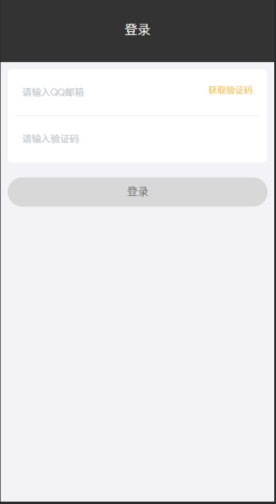
19.2 数据模型
这里的手机号也是varchar类型，所以我们就不用动它了，咱就用它存咱自己邮箱号就行（动手能力强的自己改一下也无所谓，大不了改出BUG再自己修）
| Field | Type | Collation | Null | Key | Default | Comment |
|---|---|---|---|---|---|---|
| id | bigint | (NULL) | NO | PRI | (NULL) | 主键 |
| name | varchar(50) | utf8_bin | YES | (NULL) | 姓名 | |
| phone | varchar(100) | utf8_bin | NO | (NULL) | 手机号 | |
| sex | varchar(2) | utf8_bin | YES | (NULL) | 性别 | |
| id_number | varchar(18) | utf8_bin | YES | (NULL) | 身份证号 | |
| avatar | varchar(500) | utf8_bin | YES | (NULL) | 头像 | |
| status | int | (NULL) | YES | 0 | 状态 0:禁用，1:正常 |
- 手机号（邮箱）是区分不同用户的标识，在用户登录的时候判断所输入的手机号（邮箱）是否存储在表中
- 如果不在表中，说明该用户为一个新的用户，将该用户自动保在user表中
19.3 准备工作
在开发业务功能之前，我们先将要用到的类和接口的基本结构都创建好
实体类User
Mapper接口UserMapper
业务层接口UserService
业务层实现类UserServiceImpl
控制层UserController
工具类（我们自己造自己的邮箱工具类）
- 首先导入坐标
<!-- https://mvnrepository.com/artifact/javax.activation/activation -->
<dependency>
<groupId>javax.activation</groupId>
<artifactId>activation</artifactId>
<version>1.1.1</version>
</dependency>
<!-- https://mvnrepository.com/artifact/javax.mail/mail -->
<dependency>
<groupId>javax.mail</groupId>
<artifactId>mail</artifactId>
<version>1.4.7</version>
</dependency>
<!-- https://mvnrepository.com/artifact/org.apache.commons/commons-email -->
<dependency>
<groupId>org.apache.commons</groupId>
<artifactId>commons-email</artifactId>
<version>1.4</version>
</dependency>- 然后编写一个工具类，用于发送邮件验证码
import java.util.Arrays;
import java.util.Collections;
import java.util.List;
import java.util.Properties;
import javax.mail.Authenticator;
import javax.mail.MessagingException;
import javax.mail.PasswordAuthentication;
import javax.mail.Session;
import javax.mail.Transport;
import javax.mail.internet.InternetAddress;
import javax.mail.internet.MimeMessage;
import javax.mail.internet.MimeMessage.RecipientType;
public class MailUtils {
public static void main(String[] args) throws MessagingException {
//可以在这里直接测试方法，填自己的邮箱即可
sendTestMail("2442926123@qq.com", new MailUtils().achieveCode());
}
public static void sendTestMail(String email, String code) throws MessagingException {
// 创建Properties 类用于记录邮箱的一些属性
Properties props = new Properties();
// 表示SMTP发送邮件，必须进行身份验证
props.put("mail.smtp.auth", "true");
//此处填写SMTP服务器
props.put("mail.smtp.host", "smtp.qq.com");
//端口号，QQ邮箱端口587
props.put("mail.smtp.port", "587");
// 此处填写，写信人的账号
props.put("mail.user", "2442926123@qq.com");
// 此处填写16位STMP口令
props.put("mail.password", "oblbemkgmircebfj");
// 构建授权信息，用于进行SMTP进行身份验证
Authenticator authenticator = new Authenticator() {
protected PasswordAuthentication getPasswordAuthentication() {
// 用户名、密码
String userName = props.getProperty("mail.user");
String password = props.getProperty("mail.password");
return new PasswordAuthentication(userName, password);
}
};
// 使用环境属性和授权信息，创建邮件会话
Session mailSession = Session.getInstance(props, authenticator);
// 创建邮件消息
MimeMessage message = new MimeMessage(mailSession);
// 设置发件人
InternetAddress form = new InternetAddress(props.getProperty("mail.user"));
message.setFrom(form);
// 设置收件人的邮箱
InternetAddress to = new InternetAddress(email);
message.setRecipient(RecipientType.TO, to);
// 设置邮件标题
message.setSubject("【瑞吉外卖】验证码");
// 设置邮件的内容体
message.setContent("尊敬的用户:你好!\n注册验证码为:" + code + "(有效期为一分钟,请勿告知他人)", "text/html;charset=UTF-8");
// 最后当然就是发送邮件啦
Transport.send(message);
}
// 生成验证码
public static String achieveCode() { //由于数字 1 、 0 和字母 O 、l 有时分不清楚，所以，没有数字 1 、 0
String[] beforeShuffle = new String[]{"2", "3", "4", "5", "6", "7", "8", "9", "A", "B", "C", "D", "E", "F","G", "H", "I", "J", "K", "L", "M", "N", "O", "P", "Q", "R", "S", "T", "U", "V", "W", "X", "Y", "Z", "a","b", "c", "d", "e", "f", "g", "h", "i", "j", "k", "l", "m", "n", "o", "p", "q", "r", "s", "t", "u", "v",
"w", "x", "y", "z"};
List<String> list = Arrays.asList(beforeShuffle);//将数组转换为集合
Collections.shuffle(list); //打乱集合顺序
StringBuilder sb = new StringBuilder();
for (String s : list) {
sb.append(s); //将集合转化为字符串
}
return sb.substring(3, 8);
}
}19.4 修改拦截器
- 对用户登录操作放行
//定义不需要处理的请求
String[] urls = new String[]{
"/employee/login",
"/employee/logout",
"/backend/**",
"/front/**",
"/common/**",
//对用户登陆操作放行
"/user/login",
"/user/sendMsg"
};- 判断用户是否登录
//判断用户是否登录
if(request.getSession().getAttribute("user") != null){
log.info("用户已登录，用户id为：{}",request.getSession().getAttribute("user"));
Long userId = (Long)request.getSession().getAttribute("user");
BaseContext.setCurrentId(userId);
filterChain.doFilter(request,response);
return;
}19.5 发送验证码
- 发送验证码的请求方式是POST，路径为
/user/sendMsg - 那么我们在UserController控制层中，添加sendMsg方法
这个是真滴能发送的奥，邮箱里可以收到的，待会儿我就写校验功能了
@PostMapping("/sendMsg")
public Result<String> sendMsg(@RequestBody User user, HttpSession session) throws MessagingException {
String phone = user.getPhone();
if (!phone.isEmpty()) {
//随机生成一个验证码
String code = MailUtils.achieveCode();
log.info(code);
//这里的phone其实就是邮箱，code是我们生成的验证码
MailUtils.sendTestMail(phone, code);
//验证码存session，方便后面拿出来比对
session.setAttribute(phone, code);
return Result.success("验证码发送成功");
}
return Result.error("验证码发送失败");
}19.6 登录功能
- 输入验证码，点击登录
请求路径为:/user/login，数据以json格式返回给服务端
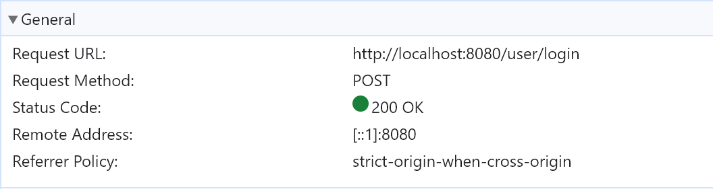
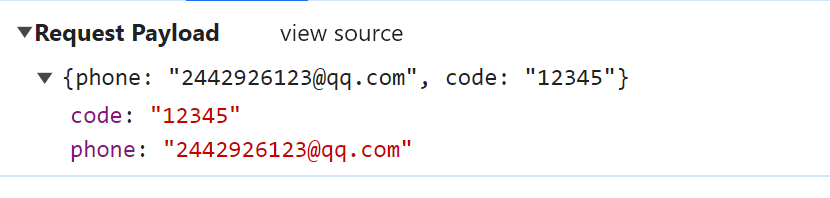
- 在UserController控制层中，添加
login方法
@PostMapping("/login")
public Result<User> login(@RequestBody Map map, HttpSession session) {
log.info(map.toString());
//获取邮箱
String phone = map.get("phone").toString();
//获取验证码
String code = map.get("code").toString();
//从session中获取验证码
String codeInSession = session.getAttribute(phone).toString();
//比较这用户输入的验证码和session中存的验证码是否一致
if (code != null && code.equals(codeInSession)) {
//如果输入正确，判断一下当前用户是否存在
LambdaQueryWrapper<User> queryWrapper = new LambdaQueryWrapper<>();
//判断依据是从数据库中查询是否有其邮箱
queryWrapper.eq(User::getPhone, phone);
User user = userService.getOne(queryWrapper);
//如果不存在，则创建一个，存入数据库
if (user == null) {
user = new User();
user.setPhone(phone);
userService.save(user);
user.setName("用户" + codeInSession);
}
//存个session，表示登录状态
session.setAttribute("user",user.getId());
//并将其作为结果返回
return Result.success(user);
}
return Result.error("登录失败");
}20. 地址簿
20.1 需求分析
- 地址簿，指的是移动端消费者用户的地址信息（外卖快递的收货地址）
- 用户登录成功后可以维护自己的地址信息（自己修改删除新增等）
- 同一个用户可以有多个地址信息，但是只能有一个默认地址。（有默认地址的话会很方便）
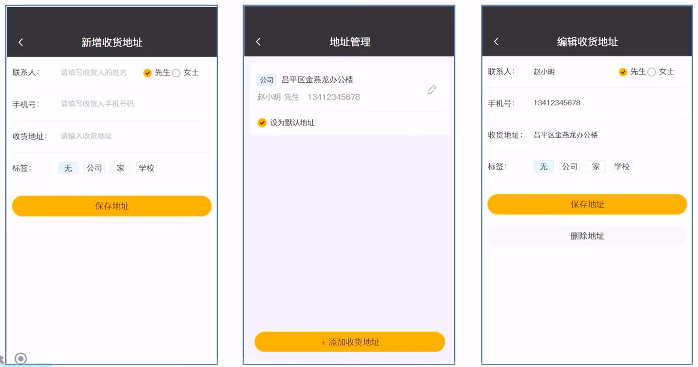
20.2 数据模型
注意这里的phone类型为varchar(11)，这显然不够我们邮箱用的，所以我们自己改一下这里，改大一点，不然做到新增地址的时候，会报错com.mysql.cj.jdbc.exceptions.MysqlDataTruncation: Data truncation: Data too long for column 'phone' at row 1
| Field | Type | Collation | Null | Key | Default | Comment |
|---|---|---|---|---|---|---|
| id | bigint | (NULL) | NO | PRI | (NULL) | 主键 |
| user_id | bigint | (NULL) | NO | (NULL) | 用户id | |
| consignee | varchar(50) | utf8_bin | NO | (NULL) | 收货人 | |
| sex | tinyint | (NULL) | NO | (NULL) | 性别 0 女 1 男 | |
| phone | varchar(11) | utf8_bin | NO | (NULL) | 手机号 | |
| province_code | varchar(12) | utf8mb4_0900_ai_ci | YES | (NULL) | 省级区划编号 | |
| province_name | varchar(32) | utf8mb4_0900_ai_ci | YES | (NULL) | 省级名称 | |
| city_code | varchar(12) | utf8mb4_0900_ai_ci | YES | (NULL) | 市级区划编号 | |
| city_name | varchar(32) | utf8mb4_0900_ai_ci | YES | (NULL) | 市级名称 | |
| district_code | varchar(12) | utf8mb4_0900_ai_ci | YES | (NULL) | 区级区划编号 | |
| district_name | varchar(32) | utf8mb4_0900_ai_ci | YES | (NULL) | 区级名称 | |
| detail | varchar(200) | utf8mb4_0900_ai_ci | YES | (NULL) | 详细地址 | |
| label | varchar(100) | utf8mb4_0900_ai_ci | YES | (NULL) | 标签 | |
| is_default | tinyint(1) | (NULL) | NO | 0 | 默认 0 否 1是 | |
| create_time | datetime | (NULL) | NO | (NULL) | 创建时间 | |
| update_time | datetime | (NULL) | NO | (NULL) | 更新时间 | |
| create_user | bigint | (NULL) | NO | (NULL) | 创建人 | |
| update_user | bigint | (NULL) | NO | (NULL) | 修改人 | |
| is_deleted | int | (NULL) | NO | 0 | 是否删除 |
20.3 准备工作
- 创建对应的实体类
AddressBook Mapper接口AddressBookMapper- 业务层接口
AddressBookService - 业务层实现类
AddressBookServicelmpl - 控制层
AddressBookController
20.4 新增收货地址
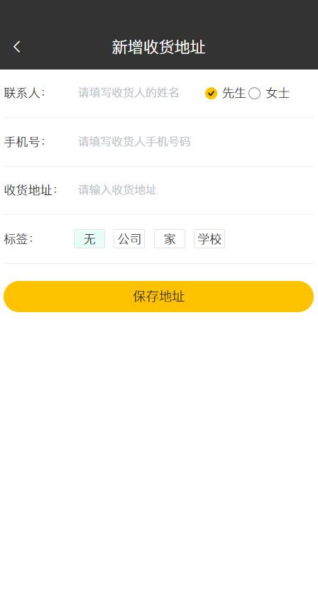
- 修改前端代码
这段代码是新增地址的前端代码 address-edit.html ，我们将其中的手机号全部替换成邮箱，判断手机号的正则也换成判断邮箱的正则，懒人就直接Copy我这段代码就好了
<!DOCTYPE html>
<html lang="en">
<head>
<meta charset="UTF-8">
<meta http-equiv="X-UA-Compatible" content="IE=edge">
<meta name="viewport" content="width=device-width, initial-scale=1.0, maximum-scale=1.0,user-scalable=no,minimal-ui">
<title>菩提阁</title>
<link rel="icon" href="./../images/favico.ico">
<!--不同屏幕尺寸根字体设置-->
<script src="./../js/base.js"></script>
<!--element-ui的样式-->
<link rel="stylesheet" href="../../backend/plugins/element-ui/index.css" />
<!--引入vant样式-->
<link rel="stylesheet" href="../styles/vant.min.css"/>
<!-- 引入样式 -->
<link rel="stylesheet" href="../styles/index.css" />
<!--本页面内容的样式-->
<link rel="stylesheet" href="./../styles/address-edit.css" />
</head>
<body>
<div id="address_edit" class="app">
<div class="divHead">
<div class="divTitle">
<i class="el-icon-arrow-left" @click="goBack"></i>{{title}}
</div>
</div>
<div class="divContent">
<div class="divItem">
<span>联系人：</span>
<el-input placeholder=" 请填写收货人的姓名" v-model="form.consignee" maxlength='10' class="inputUser"/></el-input>
<span class="spanChecked" @click="form.sex = '1'">
<i :class="{iActive:form.sex === '1'}"></i>
先生
</span>
<span class="spanChecked" @click="form.sex = '0'">
<i :class="{iActive:form.sex === '0'}"></i>
女士
</span>
</div>
<div class="divItem">
<span>邮箱：</span>
<el-input placeholder=" 请填写收货人邮箱" v-model="form.phone" maxlength='20' style="width: calc(100% - 80rem);"/></el-input>
</div>
<div class="divItem">
<span>收货地址：</span>
<el-input placeholder=" 请输入收货地址" v-model="form.detail" maxlength='140'/></el-input>
</div>
<div class="divItem ">
<span>标签：</span>
<span v-for="(item,index) in labelList" :key="index" @click="form.label = item;activeIndex = index" :class="{spanItem:true,spanActiveSchool:activeIndex === index}">{{item}}</span>
</div>
<div class="divSave" @click="saveAddress">保存地址</div>
<div class="divDelete" @click="deleteAddress" v-if="id">删除地址</div>
</div>
</div>
<!-- 开发环境版本,包含了有帮助的命令行警告 -->
<script src="../../backend/plugins/vue/vue.js"></script>
<!-- 引入组件库 -->
<script src="../../backend/plugins/element-ui/index.js"></script>
<!-- 引入vant样式 -->
<script src="./../js/vant.min.js"></script>
<script src="./../js/common.js"></script>
<script src="./../api/address.js"></script>
<!-- 引入axios -->
<script src="../../backend/plugins/axios/axios.min.js"></script>
<script src="./../js/request.js"></script>
<script>
new Vue({
el:"#address_edit",
data(){
return {
title:'新增收货地址',
form:{
consignee:'',//联系人
phone:undefined,//手机号
sex:'1',//0表示女 1 表示男
detail:'',//收货地址
label:'公司',//标签
},
labelList:[
'无','公司','家','学校'
],
id:undefined,
activeIndex :0
}
},
computed:{},
created(){
this.initData()
},
mounted(){
},
methods:{
goBack(){
history.go(-1)
},
async initData(){
const params = parseUrl(window.location.search)
this.id = params.id
if(params.id){
this.title = '编辑收货地址'
const res = await addressFindOneApi(params.id)
if(res.code === 1){
this.form = res.data
}else{
this.$notify({ type:'warning', message:res.msg});
}
}
},
async saveAddress(){
const form = this.form
if(!form.consignee){
this.$notify({ type:'warning', message:'请输入联系人'});
return
}
if(!form.phone){
this.$notify({ type:'warning', message:'请输入邮箱'});
return
}
if(!form.detail){
this.$notify({ type:'warning', message:'请输入收货地址'});
return
}
const reg = /^\w+([-+.]\w+)*@\w+([-.]\w+)*\.\w+([-.]\w+)*$/
if(!reg.test(form.phone)){
this.$notify({ type:'warning', message:'邮箱不合法'});
return
}
let res= {}
if(this.id){
res = await updateAddressApi(this.form)
}else{
res = await addAddressApi(this.form)
}
if(res.code === 1){
window.requestAnimationFrame(()=>{
window.location.replace('/front/page/address.html')
})
}else{
this.$notify({ type:'warning', message:res.msg});
}
},
deleteAddress(){
this.$dialog.confirm({
title: '确认删除',
message: '确认要删除当前地址吗？',
})
.then( async () => {
const res = await deleteAddressApi({ids:this.id })
if(res.code === 1){
window.requestAnimationFrame(()=>{
window.location.replace('/front/page/address.html')
})
}else{
this.$notify({ type:'warning', message:res.msg});
}
})
.catch(() => {
});
},
}
})
</script>
</body>
</html>- 请求路径
//新增地址
function addAddressApi(data){
return $axios({
'url': '/addressBook',
'method': 'post',
data
})
}- 在
AddressBookController中编写对应的方法
@PostMapping
public Result<String> addAddress(@RequestBody AddressBook addressBook) {
addressBook.setUserId(BaseContext.getCurrentId());
log.info("addressBook:{}", addressBook);
addressBookService.save(addressBook);
return Result.success("添加地址成功");
}20.5 修改收货地址
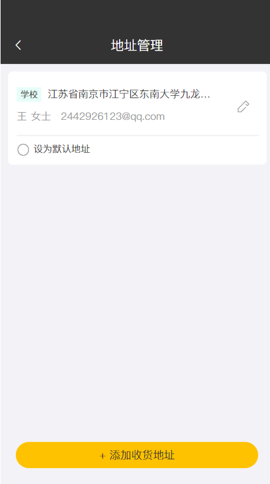
- 前端代码分析
首先点击编辑按钮，回显数据
//查询单个地址
function addressFindOneApi(id) {
return $axios({
'url': `/addressBook/${id}`,
'method': 'get',
})
}修改数据之后，点击保存，发送请求
//修改地址
function updateAddressApi(data){
return $axios({
'url': '/addressBook',
'method': 'put',
data
})
}- 代码实现
20.6 查询地址
- 点击地址管理，查看请求方式与地址
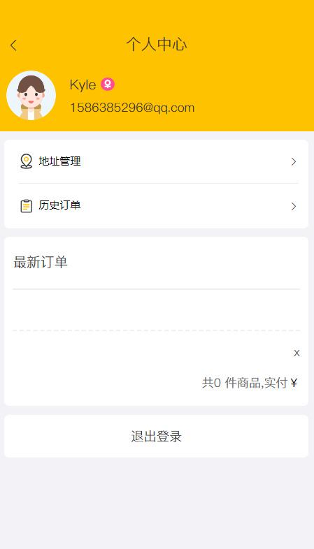
- 请求路径为
/addressBook/list，请求方式为GET，那么我们现在来AddressBookController中编写对应的方法
@GetMapping("/list")
public R<List<AddressBook>> list() {
AddressBook addressBook = new AddressBook();
addressBook.setUserId(BaseContext.getCurrentId());
LambdaQueryWrapper<AddressBook> wrapper = new LambdaQueryWrapper<>();
wrapper.eq(addressBook.getUserId() != null, AddressBook::getUserId, addressBook.getUserId());
wrapper.orderByDesc(AddressBook::getUpdateTime);
//SQL:select * from address_book where user_id = ? order by update_time desc
List<AddressBook> list = addressBookService.list(wrapper);
return R.success(list);
}20.7 设置默认地址
先来想想怎么设置默认地址
默认地址，按理说数据库中，有且仅有一条数据为默认地址，也就是
is_default字段为1如何保证整个表中的
is_default字段只有一条为1
- 每次设置默认地址的时候，将当前用户所有地址的
is_default字段设为0，随后将当前地址的is_default字段设为1
- 每次设置默认地址的时候，将当前用户所有地址的
当我们点击上图的设为默认按钮的时候，会发送请求
//设置默认地址
function setDefaultAddressApi(data){
return $axios({
'url': '/addressBook/default',
'method': 'put',
data
})
}- 在
AddressBookController中编写对应的方法
@PutMapping("/default")
public R<String> setDefault(@RequestBody AddressBook addressBook) {
LambdaUpdateWrapper<AddressBook> lambdaUpdateWrapper = new LambdaUpdateWrapper<>();
lambdaUpdateWrapper.eq(AddressBook::getUserId, BaseContext.getCurrentId());
lambdaUpdateWrapper.set(AddressBook::getIsDefault, 0);
//SQL:update address_book set is_default = 0 where user_id = ?
addressBookService.update(lambdaUpdateWrapper);
addressBook.setIsDefault(1);
//SQL:update address_book set is_default = 1 where id = ?
addressBookService.updateById(addressBook);
return R.success("设置默认地址成功");
}21. 菜品展示
21.1 需求分析
- 用户登陆成功之后，跳转到菜品页面，根据菜品分类来展示菜品和套餐
- 如果菜品设置了口味信息，则需要展示选择规格按钮，否则只展示+按钮（这部分是前端实现的）
21.2 梳理交互过程
- 页面(front/index.html)发送ajax请求，获取分类数据（菜品分类和套餐分类）（已完成）
- 页面发送ajax请求，根据具体的菜品/套餐分类，展示对应分类中的具体菜品（已完成）
21.3 前端分析
启动服务器，登录账号，监测Network选项卡，发现登录到首页会发送两个请求
- 分类
请求网址: http://localhost/category/list
请求方法: GET- 购物车
请求网址: http://localhost/shoppingCart/list
请求方法: GET其中分类请求我们之前写过了，但是当我们访问页面的时候，并没有加载出来
原因是购物车相关功能还没写，所以这里我们用一个写死了的json数据骗骗它
将url换成我们注释掉的那个就好了//获取购物车内商品的集合 function cartListApi(data) { return $axios({ 'url': '/shoppingCart/list', //'url': '/front/cartData.json', 'method': 'get', params: {...data} }) }- 那我们再次重启服务器，此时首页已经可以显示分类数据  获取分类数据：http://localhost/category/list ，之前在分类管理中已完成 展示菜品分类中的具体菜品：http://localhost/dish/list ，之前在套餐管理中已完成（新增套餐时需要选择相应的菜品） 展示套餐分类中的具体套餐在后面开发  ### 21.4 选择规格 - 但是现在还存在一个问题，我们的菜品是有口味数据的，那么这里的按钮不该是一个`+`，而应该是`选择规格` ```html <div class="divTypes" v-if="detailsDialog.item.flavors && detailsDialog.item.flavors.length > 0 && !detailsDialog.item.number " @click ="chooseFlavorClick(detailsDialog.item)">选择规格</div>
通过代码我们可以看出，选择规格按钮，是根据服务端返回数据中是否有flavors字段来决定的，但我们返回的是一个
List<Dish>，其中并没有flavors属性，所以我们需要修改前面的方法返回值为DishDto，DishDto继承了Dish，且新增了flavors属性那么现在我们直接来修改原本的list方法
@GetMapping("/list")
public Result<List<DishDto>> get(Dish dish) {
//条件查询器
LambdaQueryWrapper<Dish> queryWrapper = new LambdaQueryWrapper<>();
//根据传进来的categoryId查询
queryWrapper.eq(dish.getCategoryId() != null, Dish::getCategoryId, dish.getCategoryId());
//只查询状态为1的菜品（在售菜品）
queryWrapper.eq(Dish::getStatus, 1);
//简单排下序，其实也没啥太大作用
queryWrapper.orderByAsc(Dish::getSort).orderByDesc(Dish::getUpdateTime);
//获取查询到的结果作为返回值
List<Dish> list = dishService.list(queryWrapper);
log.info("查询到的菜品信息list:{}",list);
//item就是list中的每一条数据，相当于遍历了
List<DishDto> dishDtoList = list.stream().map((item) -> {
//创建一个dishDto对象
DishDto dishDto = new DishDto();
//将item的属性全都copy到dishDto里
BeanUtils.copyProperties(item, dishDto);
//然后获取一下菜品id，根据菜品id去dishFlavor表中查询对应的口味，并赋值给dishDto
Long itemId = item.getId();
//条件构造器
LambdaQueryWrapper<DishFlavor> lambdaQueryWrapper = new LambdaQueryWrapper<>();
//条件就是菜品id
lambdaQueryWrapper.eq(itemId != null, DishFlavor::getDishId, itemId);
//根据菜品id，查询到菜品口味
List<DishFlavor> flavors = dishFlavorService.list(lambdaQueryWrapper);
//赋给dishDto的对应属性
dishDto.setFlavors(flavors);
//并将dishDto作为结果返回
return dishDto;
//将所有返回结果收集起来，封装成List
}).collect(Collectors.toList());
return Result.success(dishDtoList);
}22. 套餐展示
- 关于菜品的展示我们就完成了，但是套餐和菜品用的并不是同一个controller，所以我们还需要来完善套餐展示
请求网址: http://localhost/setmeal/list?categoryId=1413342269393674242&status=1
请求方法: GET
- 那么我们现在就在
SetmealController中编写对应的方法
由于套餐没有口味数据，所以开发起来还是比较简单的
@GetMapping("/list")
public Result<List<Setmeal>> list(Setmeal setmeal) {
//条件构造器
LambdaQueryWrapper<Setmeal> queryWrapper = new LambdaQueryWrapper<>();
//添加条件
queryWrapper.eq(setmeal.getCategoryId() != null, Setmeal::getCategoryId, setmeal.getCategoryId());
queryWrapper.eq(setmeal.getStatus() != null, Setmeal::getStatus, 1);
//排序
queryWrapper.orderByDesc(Setmeal::getUpdateTime);
List<Setmeal> setmealList = setmealService.list(queryWrapper);
return Result.success(setmealList);
}23. 购物车
23.1 需求分析
- 移动端用户可以将菜品/套餐添加到购物车
- 对于菜品来说，如果设置了口味信息，则需要选择规格后才能加入购物车（前端实现）
- 对于套餐来说，可以直接点击当前套餐加入购物车
- 在购物车中可以修改菜品/套餐的数量，也可以清空购物车
23.2 数据模型
| Field | Type | Collation | Null | Key | Default | Comment |
|---|---|---|---|---|---|---|
| id | bigint | (NULL) | NO | PRI | (NULL) | 主键 |
| name | varchar(50) | utf8_bin | YES | (NULL) | 名称 | |
| image | varchar(100) | utf8_bin | YES | (NULL) | 图片 | |
| user_id | bigint | (NULL) | NO | (NULL) | 主键 | |
| dish_id | bigint | (NULL) | YES | (NULL) | 菜品id | |
| setmeal_id | bigint | (NULL) | YES | (NULL) | 套餐id | |
| dish_flavor | varchar(50) | utf8_bin | YES | (NULL) | 口味 | |
| number | int | (NULL) | NO | 1 | 数量 | |
| amount | decimal(10,2) | (NULL) | NO | (NULL) | 金额 | |
| create_time | datetime | (NULL) | YES | (NULL) | 创建时间 |
23.3 梳理交互过程
- 点击加入购物车按钮，页面发送ajax请求，请求服务端，将菜品/套餐添加到购物车
- 点击购物车图标，页面发送ajax请求，请求服务端，查询购物车中的菜品和套餐
- 点击清空购物车按钮，页面发送ajax请求，请求服务端来执行清空购物车操作
23.4 准备工作
在开发业务功能之前，先将需要用到的类和接口的基本结构都创建好
- 实体类
ShoppingCart Mapper接口ShoppingCartMapper- 业务层接口
ShoppingCartService - 业务层实现类
ShoppingCartServiceImpl - 控制层
ShoppingCartController
23.5 代码开发
加入购物车
- 点击
加入购物车，页面发送请求，请求路径/shoppingCart/add，请求方式POST
请求网址: http://localhost/shoppingCart/add
请求方法: POST
- 页面将数据以json格式发送给服务端
@PostMapping("/add")
public Result<ShoppingCart> add(@RequestBody ShoppingCart shoppingCart) {
log.info("shoppingCart={}", shoppingCart);
//获取当前用户id
Long currentId = BaseContext.getCurrentId();
//设置当前用户id
shoppingCart.setUserId(currentId);
//条件构造器
LambdaQueryWrapper<ShoppingCart> queryWrapper = new LambdaQueryWrapper<>();
queryWrapper.eq(ShoppingCart::getUserId, currentId);
//获取当前菜品id
Long dishId = shoppingCart.getDishId();
//判断添加的是菜品还是套餐
if (dishId != null) {
queryWrapper.eq(ShoppingCart::getDishId, dishId);
} else {
queryWrapper.eq(ShoppingCart::getSetmealId, shoppingCart.getSetmealId());
}
//查询当前菜品或者套餐是否在购物车中
ShoppingCart cartServiceOne = shoppingCartService.getOne(queryWrapper);
if (cartServiceOne != null) {
//如果已存在就在当前的数量上加1
Integer number = cartServiceOne.getNumber();
cartServiceOne.setNumber(number + 1);
shoppingCartService.updateById(cartServiceOne);
} else {
//如果不存在，则还需设置一下创建时间
shoppingCart.setCreateTime(LocalDateTime.now());
//如果不存在，则添加到购物车，数量默认为1
shoppingCartService.save(shoppingCart);
//这里是为了统一结果，最后都返回cartServiceOne会比较方便
cartServiceOne = shoppingCart;
}
return Result.success(cartServiceOne);
}查看购物车
- 之前为了不报错，我们将查看购物车的地址换成了一个死数据
那现在我们要做的就是换成真数据
//获取购物车内商品的集合
function cartListApi(data) {
return $axios({
'url': '/shoppingCart/list',
//'url': '/front/cartData.json',
'method': 'get',
params: {...data}
})
}- 请求路径为
/shoppingCart/list，请求方式为GET
直接来ShoppingCartController中添加对应的方法
@GetMapping("/list")
public Result<List<ShoppingCart>> list() {
LambdaQueryWrapper<ShoppingCart> queryWrapper = new LambdaQueryWrapper<>();
Long userId = BaseContext.getCurrentId();
queryWrapper.eq(ShoppingCart::getUserId, userId);
List<ShoppingCart> shoppingCarts = shoppingCartService.list(queryWrapper);
return Result.success(shoppingCarts);
}清空购物车
我们点击上图中的清空按钮，请求路径为
/shoppingCart/clean，请求方式为DELETE清空购物车的逻辑倒是比较简单，获取用户id，然后去
shopping__cart表中删除对应id的数据即可
那么我们现在就来ShoppingCartController中编写对应的方法
@DeleteMapping("/clean")
public Result<String> clean() {
//条件构造器
LambdaQueryWrapper<ShoppingCart> queryWrapper = new LambdaQueryWrapper<>();
//获取当前用户id
Long userId = BaseContext.getCurrentId();
queryWrapper.eq(userId != null, ShoppingCart::getUserId, userId);
//删除当前用户id的所有购物车数据
shoppingCartService.remove(queryWrapper);
return Result.success("成功清空购物车");
}24. 用户下单
24.1 需求分析
- 移动端用户将菜品或者套餐加入购物车后，可以点击购物车中的
去结算按钮，页面跳转到订单确认页面，点击去支付按钮，完成下单操作
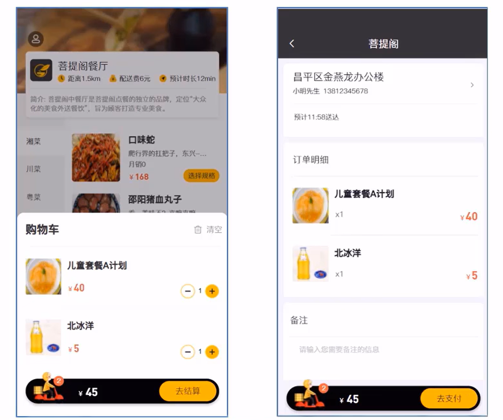
24.2 数据模型
户下单业务对应的数据表为orders表和order_detail表
orders表
| Field | Type | Collation | Null | Key | Default | Comment |
|---|---|---|---|---|---|---|
| id | bigint | (NULL) | NO | PRI | (NULL) | 主键 |
| number | varchar(50) | utf8_bin | YES | (NULL) | 订单号 | |
| status | int | (NULL) | NO | 1 | 订单状态 1待付款，2待派送，3已派送，4已完成，5已取消 | |
| user_id | bigint | (NULL) | NO | (NULL) | 下单用户 | |
| address_book_id | bigint | (NULL) | NO | (NULL) | 地址id | |
| order_time | datetime | (NULL) | NO | (NULL) | 下单时间 | |
| checkout_time | datetime | (NULL) | NO | (NULL) | 结账时间 | |
| pay_method | int | (NULL) | NO | 1 | 支付方式 1微信,2支付宝 | |
| amount | decimal(10,2) | (NULL) | NO | (NULL) | 实收金额 | |
| remark | varchar(100) | utf8_bin | YES | (NULL) | 备注 | |
| phone | varchar(255) | utf8_bin | YES | (NULL) | 手机号 | |
| address | varchar(255) | utf8_bin | YES | (NULL) | 地址 | |
| user_name | varchar(255) | utf8_bin | YES | (NULL) | 用户名 | |
| consignee | varchar(255) | utf8_bin | YES | (NULL) | 收货人 |
order_detail表
| Field | Type | Collation | Null | Key | Default | Comment |
|---|---|---|---|---|---|---|
| id | bigint | (NULL) | NO | PRI | (NULL) | 主键 |
| name | varchar(50) | utf8_bin | YES | (NULL) | 名字 | |
| image | varchar(100) | utf8_bin | YES | (NULL) | 图片 | |
| order_id | bigint | (NULL) | NO | (NULL) | 订单id | |
| dish_id | bigint | (NULL) | YES | (NULL) | 菜品id | |
| setmeal_id | bigint | (NULL) | YES | (NULL) | 套餐id | |
| dish_flavor | varchar(50) | utf8_bin | YES | (NULL) | 口味 | |
| number | int | (NULL) | NO | 1 | 数量 | |
| amount | decimal(10,2) | (NULL) | NO | (NULL) | 金额 |
24.3 梳理交互过程
- 在购物车中点击
去结算按钮，页面跳转到订单确认页面 - 在订单确认页面中，发送ajax请求，请求服务端，获取当前登录用户的默认地址
- 在订单确认页面，发送ajax请求，请求服务端，获取当前登录用户的购物车数据（已完成）
- 在订单确认页面点击
去支付按钮，发送ajax请求，请求服务端，完成下单操作
24.4 准备工作
实体类
Orders和OrderDetailMapper接口OrderMapper、OrderDetailMapper业务层接口
OrderService、OrderDetailService业务层接口实现类
OrderServiceImpl、OrderDetailServiceImpl控制层
OrderController、OrderDetailController
24.5 获取默认地址
- 我们点击去结算按钮，然后查看发送的请求url和方式
请求网址: http://localhost/addressBook/default
请求方法: GET
- 我们根据请求路径
/addressBook/default，请求方式GET自己来编写方法，进入到AddressBookController编写
@GetMapping("/default")
public Result<AddressBook> defaultAddress() {
//条件构造器
LambdaQueryWrapper<AddressBook> queryWrapper = new LambdaQueryWrapper<>();
//当前用户
queryWrapper.eq(userId != null, AddressBook::getUserId, BaseContext.getCurrentId());
//默认地址
queryWrapper.eq(AddressBook::getIsDefault, 1);
AddressBook addressBook = addressBookService.getOne(queryWrapper);
return Result.success(addressBook);
}24.6 结算
- 点击上图中的去结算按钮，查看发送的请求url与请求方式
请求网址: http://localhost/order/submit
请求方法: POST
- 提交给服务端的数据格式为JSON
AVRASM
addressBookId: "1579828298672885762",
payMethod: 1,
remark: ""请求路径
/order/submit，请求方式POST，那么我们现在就去OrderController中开发对应的功能
具体的submit方法我们放在OrderService写，OrderController调用写好的submit方法就好了编写具体的submit方法的逻辑代码，我们先来分析一下下单功能，都需要做什么事情
获取当前用户id
根据用户id查询其购物车数据
根据查询到的购物车数据，对订单表插入数据（1条）
根据查询到的购物车数据，对订单明细表插入数据（多条）
清空购物车数据
@Service
public class OrderServiceImpl extends ServiceImpl<OrderMapper, Orders> implements OrderService {
@Autowired
private ShoppingCartService shoppingCartService;
@Autowired
private UserService userService;
@Autowired
private AddressBookService addressBookService;
@Autowired
private OrderDetailService orderDetailService;
@Override
public void submit(Orders orders) {
//获取当前用户id
Long userId = BaseContext.getCurrentId();
//条件构造器
LambdaQueryWrapper<ShoppingCart> shoppingCartLambdaQueryWrapper = new LambdaQueryWrapper<>();
//根据当前用户id查询其购物车数据
shoppingCartLambdaQueryWrapper.eq(userId != null, ShoppingCart::getUserId, userId);
List<ShoppingCart> shoppingCarts = shoppingCartService.list(shoppingCartLambdaQueryWrapper);
//判断一下购物车是否为空
if (shoppingCarts == null) {
throw new CustomException("购物车数据为空，不能下单");
}
//判断一下地址是否有误
Long addressBookId = orders.getAddressBookId();
AddressBook addressBook = addressBookService.getById(addressBookId);
if (addressBookId == null) {
throw new CustomException("地址信息有误，不能下单");
}
//获取用户信息，为了后面赋值
User user = userService.getById(userId);
long orderId = IdWorker.getId();
//原子数，更精细计算
AtomicInteger amount = new AtomicInteger(0);
//向订单细节表设置属性
List<OrderDetail> orderDetailList= shoppingCarts.stream().map((item) -> {
OrderDetail orderDetail = new OrderDetail();
orderDetail.setOrderId(orderId);
orderDetail.setName(item.getName());
orderDetail.setImage(item.getImage());
orderDetail.setDishId(item.getDishId());
orderDetail.setSetmealId(item.getSetmealId());
orderDetail.setDishFlavor(item.getDishFlavor());
orderDetail.setNumber(item.getNumber());
orderDetail.setAmount(item.getAmount());
amount.addAndGet(item.getAmount().multiply(new BigDecimal(item.getNumber())).intValue());
return orderDetail;
}).collect(Collectors.toList());
//向订单表设置属性
orders.setId(orderId);
orders.setNumber(String.valueOf(orderId));
orders.setStatus(2);
orders.setUserId(userId);
orders.setAddressBookId(addressBookId);
orders.setOrderTime(LocalDateTime.now());
orders.setCheckoutTime(LocalDateTime.now());
orders.setAmount(new BigDecimal(amount.get()));
orders.setPhone(addressBook.getPhone());
orders.setUserName(user.getName());
orders.setConsignee(addressBook.getConsignee());
orders.setAddress(
(addressBook.getProvinceName() == null ? "":addressBook.getProvinceName())+
(addressBook.getCityName() == null ? "":addressBook.getCityName())+
(addressBook.getDistrictName() == null ? "":addressBook.getDistrictName())+
(addressBook.getDetail() == null ? "":addressBook.getDetail())
);
//根据查询到的购物车数据，对订单表插入数据（1条）
this.save(orders);
//根据查询到的购物车数据，对订单明细表插入数据（多条）
orderDetailService.saveBatch(orderDetailList);
//清空购物车数据
shoppingCartService.remove(shoppingCartLambdaQueryWrapper);
}
}缓存优化
- 问题说明：
- 当用户数量足够多的时候，系统访问量大
- 频繁的访问数据库，系统性能下降，用户体验差
- 所以一些通用、常用的数据，我们可以使用Redis来缓存，避免用户频繁访问数据库
1. 环境搭建
1.1 导入SpringDataRedis的maven坐标
- 这里我们就还是用SpringDataRedis来开发了
<dependency>
<groupId>org.springframework.boot</groupId>
<artifactId>spring-boot-starter-data-redis</artifactId>
</dependency>1.2 配置文件
- 配置连接redis的数据，我这里配置的是我的云服务器上装的Redis
redis:
host: 101.XXX.XXX.160 #这里换成localhost或者你自己的linux上装的redis
password: root
port: 6379
database: 01.3 配置类
- 配置一下序列化器，方便我们在图形化界面中查看我们存入的数据，在config包下新建RedisConfig类
- 但是也可以不配置RedisConfig，而是直接用
SpringRedisConfig，它的默认序列化器就是StringRedisSerializer
@Configuration
public class RedisConfig extends CachingConfigurerSupport {
@Bean
public RedisTemplate<Object, Object> redisTemplate(RedisConnectionFactory connectionFactory) {
RedisTemplate<Object, Object> redisTemplate = new RedisTemplate<>();
//默认key序列化器为：JdkSerializationRedisSerializer
redisTemplate.setKeySerializer(new StringRedisSerializer());
redisTemplate.setConnectionFactory(connectionFactory);
return redisTemplate;
}
}2. 缓存短信验证码
2.1 实现思路
- 先来回顾一下我们之前的邮件验证码是储存在哪儿的
- 之前我们是存的Session，session的有效期是30分钟
- 那现在我们学了Redis的基础应用，我们现在就可以把它缓存在Redis里
- 具体实现思路如下
- 在服务端UserController中注入RedisTemplate对象，用于操作Redis;
- 在服务端UserController的sendMsg方法中，将随机生成的验证码缓存到Redis中，并设置有效期为5分钟;
- 在服务端UserController的login方法中，从Redis中获取缓存的验证码，如果登录成功则删除Redis中的验证码;
2.2 代码改造
- 在UserController中注入RedisTemplate或StringRedisTemplate对象，用于操作Redis
@Autowired
private RedisTemplate redisTemplate;- 修改UserController中的sendMsg方法，将随机生成的验证码缓存到Redis中，并设置有效期为5分钟
@PostMapping("/sendMsg")
public Result<String> sendMsg(@RequestBody User user, HttpSession session) throws MessagingException {
String phone = user.getPhone();
if (!phone.isEmpty()) {
//随机生成一个验证码
String code = MailUtils.achieveCode();
log.info(code);
//这里的phone其实就是邮箱，code是我们生成的验证码
MailUtils.sendTestMail(phone, code);
//验证码缓存到Redis，设置存活时间5分钟
redisTemplate.opsForValue().set("code", code,5, TimeUnit.MINUTES);
return Result.success("验证码发送成功");
}
return Result.error("验证码发送失败");
}- 在服务端的UserController的login方法中，从Redis获取验证码，如果登录成功则删除Redis中的验证码
@PostMapping("/login")
public Result<User> login(@RequestBody Map map, HttpSession session) {
log.info(map.toString());
String phone = map.get("phone").toString();
String code = map.get("code").toString();
//把Redis中缓存的code拿出来
Object codeInRedis = redisTemplate.opsForValue().get(phone);
//看看接收到用户输入的验证码是否和redis中的验证码相同
log.info("你输入的code{}，redis中的code{}，计算结果为{}", code, codeInRedis, (code != null && code.equals(codeInRedis)));
if (code != null && code.equals(codeInRedis)) {
LambdaQueryWrapper<User> queryWrapper = new LambdaQueryWrapper<>();
queryWrapper.eq(User::getPhone, phone);
User user = userService.getOne(queryWrapper);
if (user == null) {
user = new User();
user.setPhone(phone);
user.setName("用户" + codeInRedis);
userService.save(user);
}
session.setAttribute("user", user.getId());
//如果登陆成功，则删除Redis中的验证码
redisTemplate.delete(phone);
return Result.success(user);
}
return Result.error("登录失败");
}3. 缓存菜品数据
- 菜品数据是我们登录移动端之后的展示页面
- 所以每当我们访问首页的时候，都会调用数据库查询一遍菜品数据
- 对于这种需要频繁访问的数据，我们可以将其缓存到Redis中以减轻服务器的压力
3.1 实现思路
- 移动端对应的菜品查看功能，是DishController中的list方法，此方法会根据前端提交的查询条件进行数据库查询操作（用户选择不同的菜品分类）。在高并发的情况下，频繁查询数据库会导致系统性能下降，服务端响应时间增长。所以现在我们需要对此方法进行缓存优化，提高系统性能
- 但是还有存在一个问题，我们是将所有的菜品缓存一份，还是按照菜品/套餐分类，来进行缓存数据呢？
- 答案是后者，当我们点击某一个分类时，只需展示当前分类下的菜品，而其他分类的菜品数据并不需要展示，所以我们在缓存的时候，根据菜品的分类，缓存多分数据，页面在查询时，点击某个分类，则查询对应分类下的菜品的缓存数据
- 具体实现思路如下
- 修改DishController中的list方法，先从Redis中获取分类对应的菜品数据，如果有，则直接返回；如果无，则查询数据库，并将查询到的菜品数据存入Redis
- 修改DishController的save、update和delete方法，加入清理缓存的逻辑，避免产生脏数据（我们实际已经在后台修改/更新/删除了某些菜品，但由于缓存数据未被清理，未重新查询数据库，用户看到的还是我们修改之前的数据）
3.2 代码改造
- 先在DishController中注入RedisTemplate
@Autowired
private RedisTemplate redisTemplate;- 修改DishController的list方法，先从Redis中获取菜品数据
- 如果有，则直接返回
- 如果无，则查询数据库，并将查询到的菜品数据让Redis缓存
@GetMapping("/list")
public Result<List<DishDto>> get(Dish dish) {
List<DishDto> dishDtoList;
String key = "dish_" + dish.getCategoryId() + "_" + dish.getStatus();
dishDtoList = (List<DishDto>) redisTemplate.opsForValue().get(key);
//如果有，则直接返回
if (dishDtoList != null){
return Result.success(dishDtoList);
}
//如果无，则查询
//条件查询器
LambdaQueryWrapper<Dish> queryWrapper = new LambdaQueryWrapper<>();
//根据传进来的categoryId查询
queryWrapper.eq(dish.getCategoryId() != null, Dish::getCategoryId, dish.getCategoryId());
//只查询状态为1的菜品（在售菜品）
queryWrapper.eq(Dish::getStatus, 1);
//简单排下序，其实也没啥太大作用
queryWrapper.orderByAsc(Dish::getSort).orderByDesc(Dish::getUpdateTime);
//获取查询到的结果作为返回值
List<Dish> list = dishService.list(queryWrapper);
log.info("查询到的菜品信息list:{}", list);
//item就是list中的每一条数据，相当于遍历了
dishDtoList = list.stream().map((item) -> {
//创建一个dishDto对象
DishDto dishDto = new DishDto();
//将item的属性全都copy到dishDto里
BeanUtils.copyProperties(item, dishDto);
//由于dish表中没有categoryName属性，只存了categoryId
Long categoryId = item.getCategoryId();
//所以我们要根据categoryId查询对应的category
Category category = categoryService.getById(categoryId);
if (category != null) {
//然后取出categoryName，赋值给dishDto
dishDto.setCategoryName(category.getName());
}
//然后获取一下菜品id，根据菜品id去dishFlavor表中查询对应的口味，并赋值给dishDto
Long itemId = item.getId();
//条件构造器
LambdaQueryWrapper<DishFlavor> lambdaQueryWrapper = new LambdaQueryWrapper<>();
//条件就是菜品id
lambdaQueryWrapper.eq(itemId != null, DishFlavor::getDishId, itemId);
//根据菜品id，查询到菜品口味
List<DishFlavor> flavors = dishFlavorService.list(lambdaQueryWrapper);
//赋给dishDto的对应属性
dishDto.setFlavors(flavors);
//并将dishDto作为结果返回
return dishDto;
//将所有返回结果收集起来，封装成List
}).collect(Collectors.toList());
//将查询的结果让Redis缓存，设置存活时间为60分钟
redisTemplate.opsForValue().set(key,dishDtoList,60, TimeUnit.MINUTES);
return Result.success(dishDtoList);
}- 修改DishController里的save、update和批量修改方法(status)，加入清理缓存的逻辑
@PostMapping
public Result<String> save(@RequestBody DishDto dishDto) {
log.info("接收到的数据为：{}", dishDto);
dishService.saveWithFlavor(dishDto);
String key = "dish_" + dishDto.getCategoryId() + "_1";
redisTemplate.delete(key);
return Result.success("添加菜品成功");
}@PutMapping
public Result<String> update(@RequestBody DishDto dishDto) {
log.info("接收到的数据为：{}", dishDto);
dishService.updateWithFlavor(dishDto);
String key = "dish_" + dishDto.getCategoryId() + "_1";
redisTemplate.delete(key);
return Result.success("修改菜品成功");
}注意：这里并不需要我们对删除操作也进行缓存清理，因为删除操作执行之前，必须先将菜品状态修改为
停售，而停售状态也会帮我们清理缓存，同时也看不到菜品，随后将菜品删除，仍然看不到菜品，故删除操作不需要进行缓存清理
4. SpringCache
4.1 SpringCache介绍
- SpringCache是一个框架，实现了基本注解的缓存功能，只需要简单的添加一个注解，就能实现缓存功能
- SpringCache提供了一层抽象，底层可以切换不同的cache实现，具体就是通过CacheManager接口来统一不同的缓存技术
- 针对不同的缓存技术，需要实现不同的CacheManager
| CacheManger | 描述 |
|---|---|
| EhCacheCacheManager | 使用EhCache作为缓存技术 |
| GuavaCacheManager | 使用Googke的GuavaCache作为缓存技术 |
| RedisCacheManager | 使用Redis作为缓存技术 |
4.2 SpringCache常用注解
| 注解 | 说明 |
|---|---|
| @EnableCaching | 开启缓存注解功能 |
| @Cacheable | 在方法执行前spring先查看缓存中是否有数据。如果有数据，则直接返回缓存数据；若没有数据，调用方法并将方法返回值放到缓存中 |
| @CachePut | 将方法的返回值放到缓存中 |
| @CacheEvict | 将一条或者多条数据从缓存中删除 |
@Cacheable@Cacheable的作用主要针对方法配置，能够根据方法的请求参数对其结果进行缓存，其主要参数说明如下
| 注解 | 说明 | 举例 |
|---|---|---|
| value | 缓存的名称，在 spring 配置文件中定义，必须指定至少一个 | 例如:@Cacheable(value=“mycache”)或者@Cacheable(value=(“cache7”, “cache2”] |
| key | 缓存的key，可以为空，如果指定要按照 SpEL表达式编写，如果不指定，则缺省按照方法的所有参数进行组合 | 例如:@Cacheable(value=“setmealCache”,key=“#userName”) |
| condition | 缓存的条件，可以为空，使用SpEL编写，返回true或者false，只有为true 才进行缓存 | 例如:@Cacheable(value=“testcache”,condition=“#userName.length()>2”) |
| unless | 满足条件则不缓存 | 例如:@Cacheable(value=“testcache”,unless=“#result = =null”) |
@Cacheable(value=“setmealCache”,key=“#setmeal.categoryId + '_' + #setmeal.status”)在redis中会以setmealCache::setmealCache::1413342269393674242_1的方式存储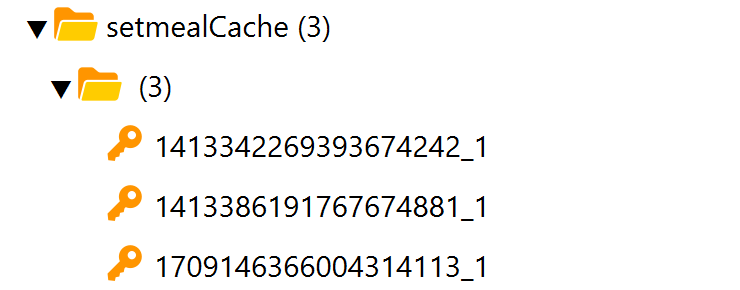
@CachePut@CachePut的作用主要针对方法配置，能够根据方法的请求参数对其结果进行缓存，和@Cacheable不同的是，它每次都会触发真实方法的调用，其主要参数说明如下（其实跟@Cacheable一样）
| 注解 | 说明 | 举例 |
|---|---|---|
| value | 缓存的名称，在 spring 配置文件中定义，必须指定至少一个 | 例如:@Cacheable(value=“mycache”)或者@Cacheable(value=(“cache7”, “cache2”] |
| key | 缓存的key，可以为空，如果指定要按照 SpEL表达式编写，如果不指定，则缺省按照方法的所有参数进行组合 | 例如:@Cacheable(value=“testcache”,key=“#userName”) |
| condition | 缓存的条件，可以为空，使用SpEL编写，返回true或者false，只有为true 才进行缓存 | 例如:@Cacheable(value=“testcache”,condition=“#userName.length()>2”) |
@CachEvict@CachEvict的作用主要针对方法配置，能够根据一定的条件对缓存进行清空
| 注解 | 说明 | 举例 |
|---|---|---|
| value | 缓存的名称，在 spring配置文件中定义，必须指定至少一个 | 例如:@Cacheable(value=“mycache”)或者@Cacheable(value={“cache1”, “cache2”] |
| key | 缓存的key，可以为空，如果指定要按照SpEL表达式编写，如果不指定，则缺省按照方法的所有参数进行组合 | 例如:@Cacheable(value=“testcache”,key=“#userName”) |
| condition | 缓存的条件，可以为空，使用SpEL编写，返回true或者false，只有为true 才进行缓存 | 例如:@Cacheable(value=“testcache”,condition=“#userName.length()>2”) |
| allEntries | 是否清空所有缓存内容，缺省为false，如果指定为true，则方法调用后将立即清空所有缓存 | 例如:@CachEvict(value=“testcache”,allEntries=true) |
| beforelnvocation | 是否在方法执行前就清空，缺省为false，如果指定为true，则在方法还没有执行的时候就清空缓存，缺省情况下，如果方法执行抛出异常，则不会清空缓存 | 例如:@CachEvict(value=“testcache”, beforelnvocation=true) |
4.3 SpringCache使用方式
- 在SpringBoot项目中，使用缓存技术只需要在项目中导入相关缓存技术的依赖包，并在启动类上使用@EnableCaching开启缓存技术支持即可。
- 这里我们使用Redis作为缓存技术，只需要导入Spring data Redis的maven坐标即可。
<dependency>
<groupId>org.springframework.boot</groupId>
<artifactId>spring-boot-starter-data-redis</artifactId>
</dependency>
<dependency>
<groupId>org.springframework.boot</groupId>
<artifactId>spring-boot-starter-cache</artifactId>
</dependency>- 随后配置application.yml
spring:
redis:
host: 101.XXX.XXX.160 #这里换成localhost或者你自己的linux上装的redis
password: root
port: 6379
database: 0
cache:
redis:
time-to-live: 3600000 #设置存活时间为一小时，如果不设置，则一直存活5. 缓存套餐数据
5.1 实现思路
- 前面我们已经实现了移动端查看套餐的功能，对应SetmealController中的list方法
- 此方法会根据前端提交的查询条件进行数据库查询操作
- 在高并发的情况下，频繁查询数据库会导致系统性能下降，服务端响应时间增强
- 现在需要对此方法进行缓存优化，提高系统性能
- 具体实现思路如下
- 修改SetmealController中的list方法，先从Redis缓存中获取套餐数据
- 如果有，则直接返回
- 如果无，则查询数据库，并将查询到的套餐数据存入Redis
- 修改SetmealController的save、update方法，加入清理缓存的逻辑，避免产生脏数据（我们实际已经在后台修改/更新/删除了某些套餐，但由于缓存数据未被清理，未重新查询数据库，用户看到的还是我们修改之前的数据）
- 修改SetmealController中的list方法，先从Redis缓存中获取套餐数据
5.2 代码修改
导入SpringCache和Redis相关的maven坐标
在appilcation.yml中配置缓存数据的过期时间
在启动类上加上
@EnableCaching注解，开启缓存注解功能
@Slf4j
@SpringBootApplication
@ServletComponentScan
@EnableTransactionManagement
@EnableCaching //开启缓存注解功能
public class ReggieApplication {
public static void main(String[] args) throws Exception {
SpringApplication.run(ReggieApplication.class,args);
log.info("项目启动成功...");
}
}- 在SetmealController的list方法上加上
@Cacheable注解
该注解的功能是：在方法执行前，Spring先查看缓存中是否有数据；如果有数据，则直接返回缓存数据；若没有数据，调用方法并将方法返回值放到缓存中
@GetMapping("/list")
@Cacheable(value = "setmealCache", key = "#setmeal.categoryId + '_' + #setmeal.status")
public Result<List<Setmeal>> list(Setmeal setmeal) {
//条件构造器
LambdaQueryWrapper<Setmeal> queryWrapper = new LambdaQueryWrapper<>();
//添加条件
queryWrapper.eq(setmeal.getCategoryId() != null, Setmeal::getCategoryId, setmeal.getCategoryId());
queryWrapper.eq(setmeal.getStatus() != null, Setmeal::getStatus, 1);
//排序
queryWrapper.orderByDesc(Setmeal::getUpdateTime);
List<Setmeal> setmealList = setmealService.list(queryWrapper);
return Result.success(setmealList);
}- 修改SetmealController的save、update和status方法，加入清理缓存的逻辑
不用修改delete方法，因为只需要编辑status即可，前面有说过
实现手段也只需要加上@CacheEvict注解，该注解的功能是：将一条或者多条数据从缓存中删除
@PostMapping
//设置allEntries为true，清空缓存名称为setmealCache的所有缓存
@CacheEvict(value = "setmealCache", allEntries = true)
public Result<String> save(@RequestBody SetmealDto setmealDto) {
log.info("套餐信息：{}", setmealDto);
setmealService.saveWithDish(setmealDto);
return Result.success("套餐添加成功");
}@PutMapping
//设置allEntries为true，清空缓存名称为setmealCache的所有缓存
@CacheEvict(value = "setmealCache", allEntries = true)
public Result<Setmeal> updateWithDish(@RequestBody SetmealDto setmealDto) {
List<SetmealDish> setmealDishes = setmealDto.getSetmealDishes();
Long setmealId = setmealDto.getId();
//先根据id把setmealDish表中对应套餐的数据删了
LambdaQueryWrapper<SetmealDish> queryWrapper = new LambdaQueryWrapper<>();
queryWrapper.eq(SetmealDish::getSetmealId, setmealId);
setmealDishService.remove(queryWrapper);
//然后在重新添加
setmealDishes = setmealDishes.stream().map((item) -> {
item.setSetmealId(setmealId);
return item;
}).collect(Collectors.toList());
//更新套餐数据
setmealService.updateById(setmealDto);
//更新套餐对应菜品数据
setmealDishService.saveBatch(setmealDishes);
return Result.success(setmealDto);
}@PostMapping("/status/{status}")
//设置allEntries为true，清空缓存名称为setmealCache的所有缓存
@CacheEvict(value = "setmealCache", allEntries = true)
public Result<String> status(@PathVariable String status, @RequestParam List<Long> ids) {
LambdaUpdateWrapper<Setmeal> updateWrapper = new LambdaUpdateWrapper<>();
updateWrapper.in(Setmeal::getId, ids);
updateWrapper.set(Setmeal::getStatus, status);
setmealService.update(updateWrapper);
return Result.success("批量操作成功");
}
- 在做完这一步之后，会发现报错:
DefaultSerializer requires a Serializable payload but received an object of type- 这是因为要缓存的JAVA对象必须实现
Serializable接口，因为Spring会先将对象序列化再存入Redis，将缓存实体类继承Serializablepublic class Result<T> implements Serializable
读写分离
1. 问题分析
- 目前我们所有的读和写的压力都是由一台数据库来承担，
- 如果数据库服务器磁盘损坏，则数据会丢失（没有备份）
- 解决这个问题，就可以用MySQL的主从复制，写操作交给主库，读操作交给从库
- 同时将主库写入的内容，同步到从库中
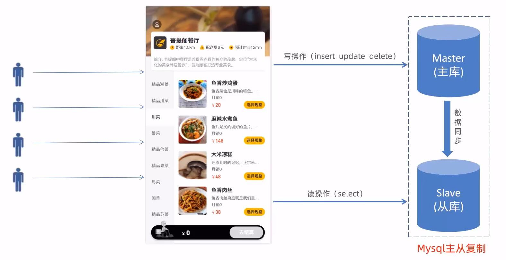
2. MySQL主从复制
2.1 介绍
- MySQL主从复制是一个异步的复制过程，底层是基于Mysql数据库自带的二进制日志功能。就是一台或多台NysQL数据库（slave，即从库）从另一台MySQL数据库(master，即主库）进行日志的复制然后再解析日志并应用到自身，最终实现从库的数据和主库的数据保持一致。MySQL主从复制是MySQL数据库自带功能，无需借助第三方工具。
- MySQL复制过程分成三步:
master将改变记录到二进制日志(binary log)slave将master的binary log拷贝到它的中继日志(relay log)slave重做中继日志中的事件，将改变应用到自己的数据库中
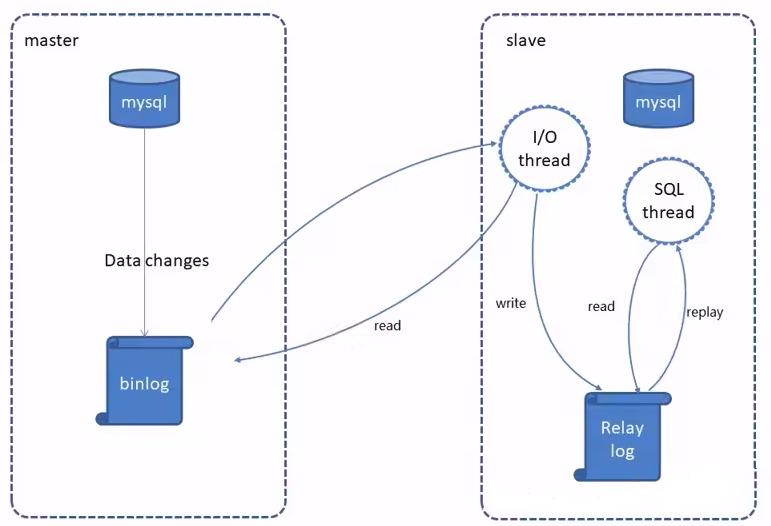
2.2 配置
前置条件
准备好两台服务器，分别安装MySQL并启动服务成功，我这里用的两台虚拟机（另一台是克隆的，记得修改克隆虚拟机的MySQL的UUID）修改克隆机的MySQL的uuid
- 登录克隆机的MySQL
- 执行SQL语句，记住生成的uuid，待会需要用
mysql> select uuid(); +--------------------------------------+ | uuid() | +--------------------------------------+ | aaa9efc9-6e25-11ee-9d03-000c294093b6 | +--------------------------------------+- 查看配置文件目录
mysql> show variables like 'datadir'; +---------------+-----------------+ | Variable_name | Value | +---------------+-----------------+ | datadir | /var/lib/mysql/ | +---------------+-----------------+- 编辑配置文件目录，修改uuid为刚刚我们生成的uuid
vi /var/lib/mysql/auto.cnf- 重启服务
service mysqld restart配置主库，我这里就用虚拟机上的mysql当主库了
修改MySQL数据库的配置文件，虚拟机是
/etc/my.cnf- 找到
[mysqld]，在下面插入两行
log_bin=mysql-bin #[必须]启用二进制日志 server-id=100 #[必须]服务器唯一ID,只需要确保其id是唯一的就好- 找到
重启mysql服务
systemctl restart mysqld- 登录Mysql数据库,执行下面的SQL
create user nanying identified by 'Root@123456'; grant replication slave on *.* to nanying;上面的SQL的作用是创建一个用户
nanying,密码为Root@123456，并且给nanying用户授予replication slave权限，常用语建立复制时所需要用到的用户权限，也就是slave必须被master授权具有该权限的用户，才能通过该用户复制，这是因为主库和从库之间需要互相通信，处于安全考虑，只有通过验证的从库才能从主库中读取二进制数据- 登录Mysql数据库,执行下面的SQL
show master status;记录下结果中File和Position的值
+------------------+----------+--------------+------------------+-------------------+ | File | Position | Binlog_Do_DB | Binlog_Ignore_DB | Executed_Gtid_Set | +------------------+----------+--------------+------------------+-------------------+ | mysql-bin.000001 | 694 | | | | +------------------+----------+--------------+------------------+-------------------+配置从库，我这里就用我的另一台克隆的虚拟机了
修改MySQL数据库的配置文件
/etc/my.cnf- 找到
[mysqld]，在下面插入一行
server-id=130 #[必须]服务器唯一ID,只需要确保其id是唯一的就好
- 找到
重启mysql服务
systemctl restart mysqld- 登录Mysql数据库,执行下面的SQL，将参数修改为你自己的
change master to master_host='192.168.71.100',master_user='nanying',master_password='Root@123456',master_log_file='mysql-bin.000001',master_log_pos=694; CHANGE MASTER TO GET_MASTER_PUBLIC_KEY=1; # 修改mysql 8.0之后默认的认证方式 start slave;上面的SQL的作用是创建一个用户
nanying,密码为Root@123456，并且给nanying用户授予replication slave权限，常用语建立复制时所需要用到的用户权限，也就是slave必须被master授权具有该权限的用户，才能通过该用户复制，这是因为主库和从库之间需要互相通信，处于安全考虑，只有通过验证的从库才能从主库中读取二进制数据- 登录Mysql数据库,执行SQL，查看从库的状态
show slave status\G
看到如下如下三行配置相同，则主从连接成功
Slave_IO_State: Waiting for master to send event
Slave_IO_Running: Yes
Slave_SQL_Running: Yes
3. 读写分离案例
3.1 背景
- 面对日益增加的系统访问量，数据库的吞吐量面临着巨大的瓶颈。
- 对于同一时刻有
大量并发读操作和较少的写操作类型的应用系统来说，将数据库拆分为主库和从库 主库主要负责处理事务性的增删改操作从库主要负责查询操作- 这样就能有效避免由数据更新导致的行锁，使得整个系统的查询性能得到极大的改善
3.2 Sharding-JDBC介绍
- Sharding-JDBC定位为轻量级的JAVA框架，在JAVA的JDBC层提供额外的服务，它使得客户端直连数据库，以jar包形式提供服务，无需额外部署和依赖，可理解为增强版的JDBC驱动，完全兼容JDBC和各种ORM框架
- 使用Sharding-JDBC可以在程序中轻松的实现数据库读写分离
- 适用于任何基于JDBC的ORM框架
- 支持任何第三方的数据库连接池
- 支持任意实现JDBC规范的数据库
- 使用Sharding-JDBC框架的步骤
- 导入对应的maven坐标
- 在配置文件中配置读写分离规则
- 在配置文件中配置允许bean定义覆盖配置项
4. 项目实现读写分离
前面我们已经配置好了主从数据库，那么我们现在就用瑞吉外卖试试读写分离
- 导入瑞吉外卖的SQL数据
- Git创建一个新分支
v1.1，便于我们提交维护 - 导入
Sharding-JDBC的maven坐标
<dependency> <groupId>org.apache.shardingsphere</groupId> <artifactId>sharding-jdbc-spring-boot-starter</artifactId> <version>4.0.0-RC1</version> </dependency>- 在配置文件中配置读写分离规则,配置允许bean定义覆盖配置项
配置项可能会爆红，但是不影响影响项目启动，是IDEA的问题
spring: shardingsphere: datasource: names: master,slave master: type: com.alibaba.druid.pool.DruidDataSource driver-class-name: com.mysql.cj.jdbc.Driver url: jdbc:mysql://192.168.71.100:3306/reggie?serverTimezone=Asia/Shanghai&useUnicode=true&characterEncoding=utf-8&zeroDateTimeBehavior=convertToNull&useSSL=false&allowPublicKeyRetrieval=true username: root password: 123456 slave: type: com.alibaba.druid.pool.DruidDataSource driver-class-name: com.mysql.cj.jdbc.Driver url: jdbc:mysql://192.168.71.130:3306/reggie?serverTimezone=Asia/Shanghai&useUnicode=true&characterEncoding=utf-8&zeroDateTimeBehavior=convertToNull&useSSL=false&allowPublicKeyRetrieval=true username: root password: 123456 masterslave: load-balance-algorithm-type: round_robin name: dataSource master-data-source-name: master slave-data-source-names: slave props: sql: show: true main: allow-bean-definition-overriding: true
可能遇到的问题
- 启动时不报错，但是登陆功能报
500异常- 查看控制台出现
SQLFeatureNotSupportedException异常解决方案
修改pom.xml中druid的maven坐标为
<dependency> <groupId>com.alibaba</groupId> <artifactId>druid-spring-boot-starter</artifactId> <version>1.1.20</version> </dependency>
Nginx
1. 简介
- Nginx是一款轻量级的
Web/反向代理服务器以及电子邮件(IMAP/POP3)代理服务器，其特点是占有内存少，并发能力强。 - 事实上Nginx的并发能力在同类型的网页服务器中表现较好，中国大陆使用Nginx的网站有：百度、京东、新浪、网易、腾讯、淘宝等。
- Nginx是由伊戈尔·赛索耶夫为俄罗斯访问量第二的Rambler.ru站点（俄文：Pam6nep）开发的，第一个公开版本0.1.0发布于2004年10月4日。
- 官网：https://nginx.org/
2. Nginx的下载和安装
安装过程：
- Nginx是C语言开发的，所以需要先安装依赖
yum -y install gcc pcre-devel zlib-devel openssl openssl-devel- 下载Nginx安装包
yum install wget wget https://nginx.org/download/nginx-1.24.0.tar.gz- 解压，我习惯放在
/usr/local目录下
tar -zxvf nginx-1.24.0.tar.gz -C /usr/local/- 进入到我们解压完毕后的文件夹内
cd /usr/local/nginx-1.24.0/- 建安装路径文件夹
mkdir /usr/local/nginx- 安装前检查工作
./configure --prefix=/usr/local/nginx- 编译并安装
make && make install
3. Nginx目录结构
安装完Nginx后，我们先来熟悉一下Nginx的目录结构
重点目录/文件:
- conf/nginx.conf
- nginx配置文件
- html
- 存放静态文件(html、css、Js等)
- logs
- 日志目录，存放日志文件
- sbin/nginx
- 二进制文件，用于启动、停止Nginx服务
- conf/nginx.conf
文件目录树状图如下
文件目录树状图如下
.
├── conf <-- Nginx配置文件
│ ├── fastcgi.conf
│ ├── fastcgi.conf.default
│ ├── fastcgi_params
│ ├── fastcgi_params.default
│ ├── koi-utf
│ ├── koi-win
│ ├── mime.types
│ ├── mime.types.default
│ ├── nginx.conf <-- 这个文件我们经常操作
│ ├── nginx.conf.default
│ ├── scgi_params
│ ├── scgi_params.default
│ ├── uwsgi_params
│ ├── uwsgi_params.default
│ └── win-utf
├── html <-- 存放静态文件，我们后期部署项目，就要将静态文件放在这
│ ├── 50x.html
│ └── index.html <-- 提供的默认的页面
├── logs <-- 日志目录，由于我们新装的Nginx，所以现在还没有日志文件
└── sbin
└── nginx <-- 这个文件我们也经常操作4. Nginx配置文件结构
- Nginx配置文件(conf/nginx.conf)整体分为三部分
- 全局块 和Nginx运行相关的全局配置
- events块 和网络连接相关的配置
- http块 代理、缓存、日志记录、虚拟主机配置
- http全局块
- Server块
- Server全局块
- location块
worker_processes 1; <-- 全局块
events { <-- events块
worker_connections 1024;
}
http { <-- http块
include mime.types; <-- http全局块
default_type application/octet-stream;
sendfile on;
keepalive_timeout 65;
server { <-- Server块
listen 80; <-- Server全局块
server_name localhost;
location / { <-- location块
root html;
index index.html index.htm;
}
error_page 500 502 503 504 /50x.html;
location = /50x.html {
root html;
}
}
}注意：http块中可以配置多个Server块，每个Server块中可以配置多个location块
5. Nginx命令
查看版本
- 进入sbin目录，输入
./nginx -v
[root@localhost sbin]## ./nginx -v nginx version: nginx/1.22.1- 进入sbin目录，输入
检查配置文件正确性
- 进入sbin目录，输入
./nginx -t，如果有错误会报错，而且也会记日志
[root@localhost sbin]## ./nginx -t nginx: the configuration file /usr/local/nginx/conf/nginx.conf syntax is ok nginx: configuration file /usr/local/nginx/conf/nginx.conf test is successful- 进入sbin目录，输入
启动与停止
- 进入sbin目录，输入
./nginx，启动完成后查看进程
[root@localhost sbin]## ./nginx [root@localhost sbin]## ps -ef | grep nginx root 89623 1 0 22:08 ? 00:00:00 nginx: master process ./nginx nobody 89624 89623 0 22:08 ? 00:00:00 nginx: worker process root 89921 1696 0 22:08 pts/0 00:00:00 grep --color=auto nginx- 如果想停止Nginx服务，输入
./nginx -s stop，停止服务后再次查看进程
[root@localhost sbin]## ./nginx -s stop [root@localhost sbin]## ps -ef | grep nginx root 93772 1696 0 22:11 pts/0 00:00:00 grep --color=auto nginx- 进入sbin目录，输入
重新加载配置文件
- 当修改Nginx配置文件后，需要重新加载才能生效，可以使用下面命令重新加载配置文件：
./nginx -s reload。
- 当修改Nginx配置文件后，需要重新加载才能生效，可以使用下面命令重新加载配置文件：
上面的所有命令，都需要我们在sbin目录下才能运行，比较麻烦，所以我们可以将Nginx的二进制文件配置到环境变量中，这样无论我们在哪个目录下，都能使用上面的命令
使用
vim /etc/profile命令打开配置文件，并配置环境变量，保存并退出- PATH=$JAVA_HOME/bin:$PATH + PATH=/usr/local/nginx/sbin:$JAVA_HOME/bin:$PATH之后重新加载配置文件，使用
source /etc/profile命令，然后我们在任意位置输入nginx即可启动服务，nginx -s stop即可停止服务
- 查看自己IP，启动服务后，浏览器输入ip地址就可以访问Nginx的默认页面
ip addr
6. Nginx具体应用
6.1 部署静态资源
- Nginx可以作为静态web服务器来部署静态资源。静态资源指在服务端真实存在并且能够直接展示的一些文件，比如常见的html页面、css文件、js文件、图片、视频等资源。
- 相对于Tomcat，Nginx处理静态资源的能力更加高效，所以在生产环境下，一般都会将静态资源部署到Nginx中。
- 将静态资源部署到Nginx非常简单，只需要将文件复制到Nginx安装目录下的html目录中即可。
6.2 反向代理
正向代理- 正向代理是一个位于客户端和原始服务器（origin server)之间的服务器，为了从原始服务器取得内容，客户端向代理发送一个请求并指定目标（原始服务器），然后代理向原始服务器转交请求并将获得的内容返回给客户端。
- 正向代理的典型用途是为在防火墙内的局域网客户端提供访问Internet的途径。
- 正向代理一般是在客户端设置代理服务器，通过代理服务器转发请求，最终访问到目标服务器。（梯子）
反向代理反向代理服务器位于用户与目标服务器之间，但是对于用户而言，反向代理服务器就相当于目标服务器，即用户直接访问反向代理服务器就可以获得目标服务器的资源，反向代理服务器负责将请求转发给目标服务器。
- 便于统一管理多台web服务器
- web服务器可能在公司内网，无法直接访问
用户不需要知道目标服务器的地址，也无须在用户端作任何设定。
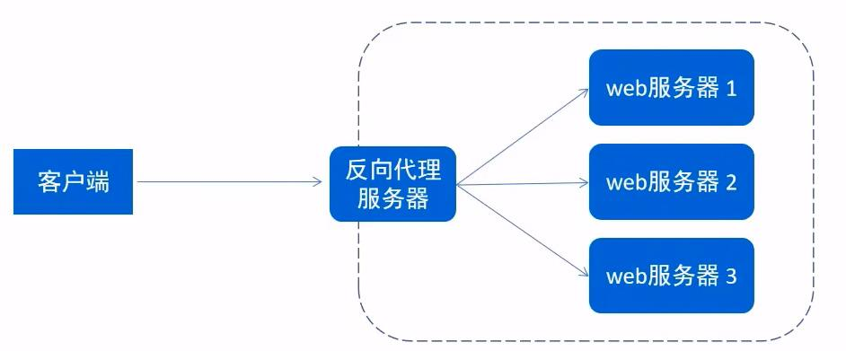
举个例子- 正向代理：你让舍友去给你带三楼卖的煎饼（你最终会得到一个三楼的煎饼）
- 反向代理：你让舍友去给你买煎饼（你最终只会得到一个煎饼，但你不知道煎饼是哪儿卖的）
- 和正向代理不同，反向代理相当于是为目标服务器工作的，当你去访问某个网站时，你以为你访问问的是目标服务器，其实不然，当你访问时，其实是由一个代理服务器去接收你的请求，正向代理与反向代理最简单的区别： 正向代理隐藏的是用户（卖煎饼的不知道是你要买），反向代理隐藏的是服务器（你不知道煎饼是谁卖的）。
- 正向代理侧重的是用户，用户知道可以通过代理访问无法访问的资源，而反向代理侧重点在服务器这边，用户压根不知道自己访问的是资源时通过代理人去转发的。
配置反向代理
这里是在192.168.138.100上配置的，那么访问流程如下
客户端 –>192.168.138.100:82–>192.168.138.101/50x.html
客户端访问反向代理服务器的82端口，而82端口又将请求转发给web服务器的50x.html资源
注意这里需要开启反向代理服务器的82端口
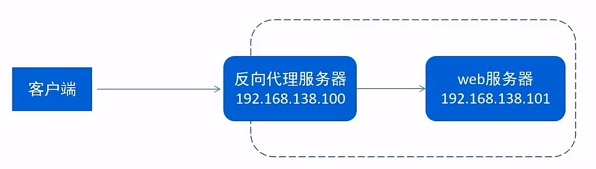
server {
listen 82;
server_name localhost;
location / {
proxy_pass http://http://192.168.138.101/50x.html;
}
}6.3 负载均衡
- 早期的网站流量和业务功能都比较简单，单台服务器就可以满足基本需求，但是随着互联网的发展，业务流量越来越大并且业务逻辑也越来越复杂，单台服务器的性能及单点故障问题就凸显出来了，因此需要多台服务器组成应用集群，进行性能的水平扩展以及避免单点故障出现。
- 应用集群：将同一应用部署到多台机器上，组成应用集群，接收负载均衡器分发的请求，进行业务处理并返回响应数据。
- 负载均衡器：将用户请求根据对应的负载均衡算法分发到应用集群中的一台服务器进行处理。
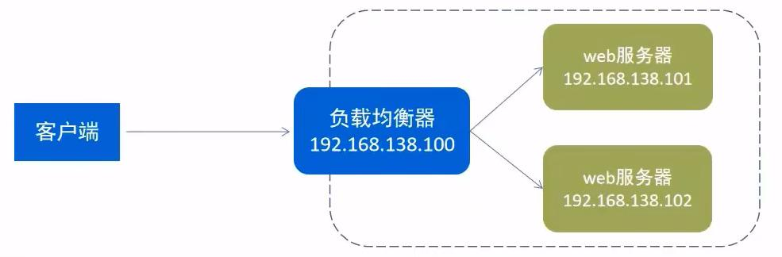
- 配置负载均衡
默认是轮询算法，第一次访问是192.168.138.101，第二次访问是101.XXX.XXX.160
也可以改用权重方式，权重越大，几率越大，现在的访问三分之二是第一台服务器接收，三分之一是第二台服务器接收server 192.168.138.101 weight=10server 101.XXX.XXX.160 weight=5
upstream targetServer{
server 192.168.138.101;
server 101.XXX.XXX.160;
}
server {
listen 82;
server_name localhost;
location / {
proxy_pass http://targetServer;
}
}- 负载均衡策略
| 名称 | 说明 |
|---|---|
| 轮询 | 默认方式 |
| weight | 权重方式 |
| ip_hash | 依据ip分配方式 |
| least_conn | 依据最少连接方式 |
| url_hash | 依据url分配方式 |
| fair | 依据响应时间方式 |
7. Nginx的特点
- 跨平台：Nginx可以在大多数操作系统中运行，而且也有Windows的移植版本
- 配置异常简单：非常容易上手。配置风格跟程序开发一样，神一般的配置
- 非阻塞、高并发：数据复制时，磁盘I/O的第一阶段是非阻塞的。官方测试能够支撑5万并发连接，在实际生产环境中跑到2-3万并发连接数（这得益于Nginx使用了最新的epoll模型）
- 事件驱动：通信机制采用epoll模式，支持更大的并发连接数
- 内存消耗小：处理大并发的请求内存消耗非常小。在3万并发连接下，开启的10个Nginx进程才消耗150M内存（15M*10=150M）
- 成本低廉：Nginx作为开源软件，可以免费试用。而购买F5 BIG-IP、NetScaler等硬件负载均衡交换机则需要十多万至几十万人民币
- 内置健康检查功能：如果Nginx Proxy后端的某台Web服务器宕机了，不会影响前端访问。
- 节省带宽：支持GZIP压缩，可以添加浏览器本地缓存的Header头。
- 稳定性高：用于反向代理，宕机的概率微乎其微。
前后端分离开发
- 开发人员同时负责前端和后端代码开发，分工不明确，开发效率低
- 前后端代码混合在一个工程中，不便于管理
- 对开发人员要求高，人员招聘困难
- 所以衍生出了一种前后端分离开发
1. 前后端分离开发
1.1 介绍
前后端分离开发，就是在项目开发过程中，对前端代码的开发，专门由前端开发人员负责，后端代码由后端开发人员负责，这样可以做到分工明确，各司其职，提高开发效率，前后端代码并行开发，可以加快项目的开发速度。目前，前后端分离开发方式已经被越来越多的公司采用了，成为现在项目开发的主流开发方式。- 前后端分离开发后，从工程结构上也会发生变化，即前后端代码不再混合在同一个maven工程中，而是分为
前端工程和后端工程
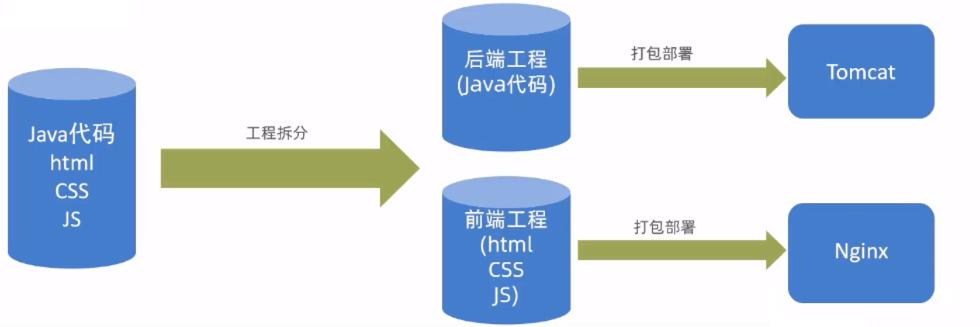
1.2 开发流程
- 前后端开发人员都参照接口API文档进行开发
- 接口（API接口） 就是一个http的请求地址，主要就是去定义：请求路径、请求方式、请求参数、响应参数等内容。
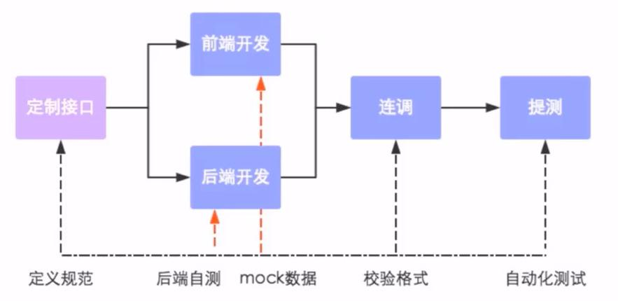
2. YApi
2.1 介绍
- YApi是高效、易用、功能强大的api管理平台，旨在为开发、产品、测试人员提供更优雅的接口管理服务。可以帮助开发者轻松创建、发布、维护API，YApi还为用户提供了优秀的交互体验，开发人员只需要利用平台提供的接口数据写入工具以及简单的点击操作就可以实现接口的管理。
- YApi让接口开发更简单高效，让接口的管理更具有可读性、可维护性，让团队协作更合理。
- Git仓库：https://github.com/YMFE/yapi
2.2 使用
需要首先在本地配置
- 使用YApi，可以执行下面操作：
- 添加项目
- 添加分类
- 添加接口
- 编辑接口
- 查看接口
3. Swagger
3.1 介绍
- 使用Swagger你只需要按照它的规范去定义接口及接口相关的信息，再通过Swagger衍生出来的一系列项目和工具，就可以做成各种格式的接口文档，以及在线接口调试页面等。
- 官网：https://swagger.io/
3.2 使用方式
- 导入对应的maven坐标
<dependency>
<groupId>com.github.xiaoymin</groupId>
<artifactId>knife4j-spring-boot-starter</artifactId>
<version>3.0.3</version>
</dependency>- 导入knife4j相关配置，并配置静态资源映射，否则接口文档页面无法访问，注意将controller的包路径修改为你自己的
@Configuration
@Slf4j
@EnableSwagger2 //+
@EnableKnife4j //+
public class WebMvcConfig extends WebMvcConfigurationSupport {
@Override
protected void addResourceHandlers(ResourceHandlerRegistry registry) {
log.info("开始进行静态资源映射...");
registry.addResourceHandler("/backend/**").addResourceLocations("classpath:/backend/");
registry.addResourceHandler("/front/**").addResourceLocations("classpath:/front/");
// 设置静态资源映射
registry.addResourceHandler("doc.html").addResourceLocations("classpath:/META-INF/resources/");//+
registry.addResourceHandler("/webjars/**").addResourceLocations("classpath:/META-INF/resources/webjars/");//+
}
@Override
protected void extendMessageConverters(List<HttpMessageConverter<?>> converters) {
MappingJackson2HttpMessageConverter messageConverter = new MappingJackson2HttpMessageConverter();
//设置对象转化器，底层使用jackson将java对象转为json
messageConverter.setObjectMapper(new JacksonObjectMapper());
//将上面的消息转换器对象追加到mvc框架的转换器集合当中(index设置为0，表示设置在第一个位置，避免被其它转换器接收，从而达不到想要的功能)
converters.add(0, messageConverter);
}
//+
@Bean
public Docket createRestApi() {
//文档类型
return new Docket(DocumentationType.SWAGGER_2)
.apiInfo(apiInfo())
.select()
.apis(RequestHandlerSelectors.basePackage("com.blog.controller"))
.paths(PathSelectors.any())
.build();
}
//+
private ApiInfo apiInfo() {
return new ApiInfoBuilder()
.title("瑞吉外卖")
.version("1.0")
.description("瑞吉外卖接口文档")
.build();
}
}- 在拦截器在中设置不需要处理的请求路径
//定义不需要处理的请求
String[] urls = new String[]{
"/employee/login",
"/employee/logout",
"/backend/**",
"/front/**",
"/common/**",
//对用户登陆操作放行
"/user/login",
"/user/sendMsg",
"/doc.html",
"/webjars/**",
"/swagger-resources",
"/v2/api-docs"
};- 启动服务，访问 http://localhost/doc.html 即可看到生成的接口文档，我这里的端口号用的80，根据自己的需求改
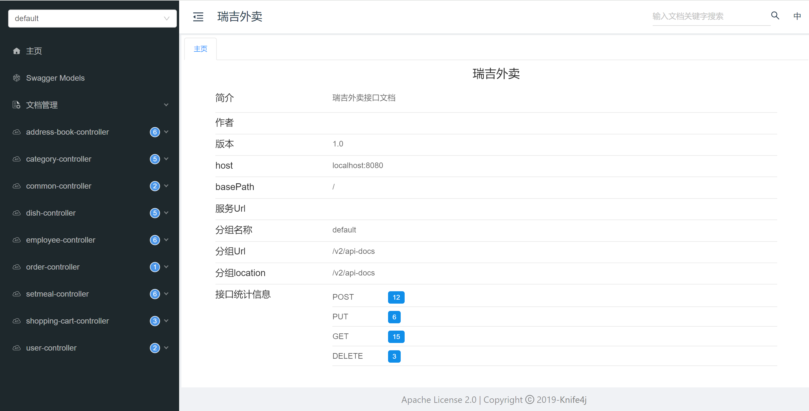
3.3 常用注解
| 注解 | 说明 |
|---|---|
| @Api | 用在请求的类上，例如Controller，表示对类的说明 |
| @ApiModel | 用在类上，通常是个实体类，表示一个返回响应数据的信息 |
| @ApiModelProperty | 用在属性上，描述响应类的属性 |
| @ApiOperation | 用在请求的方法上，说明方法的用途、作用 |
| @ApilmplicitParams | 用在请求的方法上，表示一组参数说明 |
| @ApilmplicitParam | 用在@ApilmplicitParams注解中，指定一个请求参数的各个方面 |
- 加上这些注解，可以将我们生成的接口文档更规范
@Data
@ApiModel("用户")
public class User implements Serializable {
private static final long serialVersionUID = 1L;
@ApiModelProperty("主键")
private Long id;
//姓名
@ApiModelProperty("姓名")
private String name;
//手机号
@ApiModelProperty("手机号")
private String phone;
//性别 0 女 1 男
@ApiModelProperty("性别 0 女 1 男")
private String sex;
//身份证号
@ApiModelProperty("身份证号")
private String idNumber;
//头像
@ApiModelProperty("头像")
private String avatar;
//状态 0:禁用，1:正常
@ApiModelProperty("状态 0:禁用，1:正常")
private Integer status;
}@RestController
@Slf4j
@RequestMapping("/user")
@Api(tags = "用户相关接口")
public class UserController {
@Autowired
private UserService userService;
@Autowired
private RedisTemplate redisTemplate;
@PostMapping("/sendMsg")
@ApiOperation("发送验证邮件接口")
public Result<String> sendMsg(@RequestBody User user) throws MessagingException {
String phone = user.getPhone();
if (!phone.isEmpty()) {
//随机生成一个验证码
String code = MailUtils.achieveCode();
log.info(code);
//这里的phone其实就是邮箱，code是我们生成的验证码
MailUtils.sendTestMail(phone, code);
//验证码缓存到Redis，设置存活时间5分钟
redisTemplate.opsForValue().set(phone, code,5, TimeUnit.MINUTES);
return Result.success("验证码发送成功");
}
return Result.error("验证码发送失败");
}
@PostMapping("/login")
@ApiOperation("用户登录接口")
@ApiImplicitParam(name = "map",value = "map集合接收数据",required = true)
public Result<User> login(@RequestBody Map map, HttpSession session) {
log.info(map.toString());
String phone = map.get("phone").toString();
String code = map.get("code").toString();
//把Redis中缓存的code拿出来
Object codeInRedis = redisTemplate.opsForValue().get(phone);
//看看接收到用户输入的验证码是否和redis中的验证码相同
log.info("你输入的code{}，redis中的code{}，计算结果为{}", code, codeInRedis, (code != null && code.equals(codeInRedis)));
if (code != null && code.equals(codeInRedis)) {
LambdaQueryWrapper<User> queryWrapper = new LambdaQueryWrapper<>();
queryWrapper.eq(User::getPhone, phone);
User user = userService.getOne(queryWrapper);
if (user == null) {
user = new User();
user.setPhone(phone);
user.setName("用户" + codeInRedis);
userService.save(user);
}
session.setAttribute("user", user.getId());
//如果登陆成功，则删除Redis中的验证码
redisTemplate.delete(phone);
return Result.success(user);
}
return Result.error("登录失败");
}
@PostMapping("/loginout")
@ApiOperation("用户登出接口")
public Result<String> logout(HttpServletRequest request) {
request.getSession().removeAttribute("user");
return Result.success("退出成功");
}
}- 重新启动服务器，访问 http://localhost/doc.html 查看新生成的接口文档，可读性比之前提高了
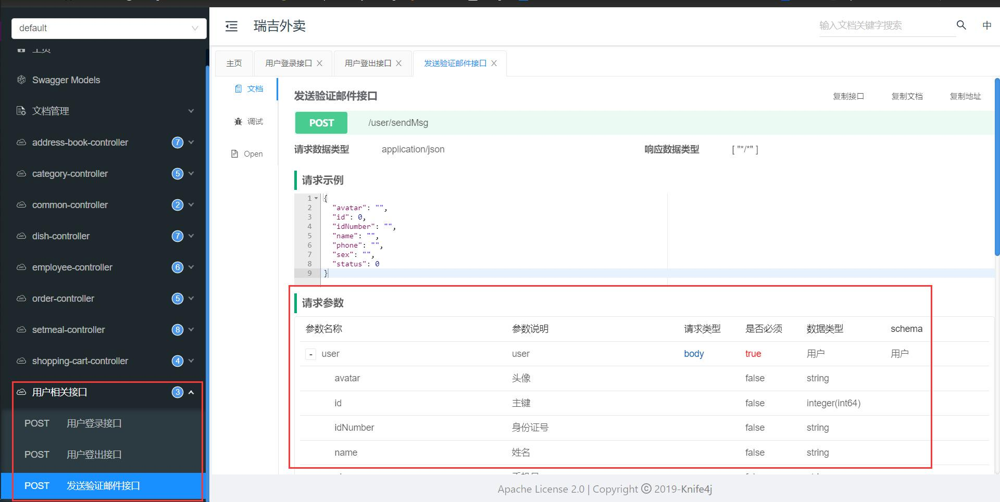
4. 项目部署
4.1 配置环境说明
一共需要三台服务器
- 192.168.138.100（服务器A）
- Nginx：部署前端项目、配置反向代理
- MySql：主从复制结构中的主库
- 192.168.138.101（服务器B）
- jdk：运行java项目
- git：版本控制工具
- maven：项目构建工具
- jar：Spring Boot 项目打成jar包基于内置Tomcat运行
- MySql：主从复制结构中的从库
- 101.xxx.xxx.160（服务器C，我用的我的云服务器）
- Redis：缓存中间件
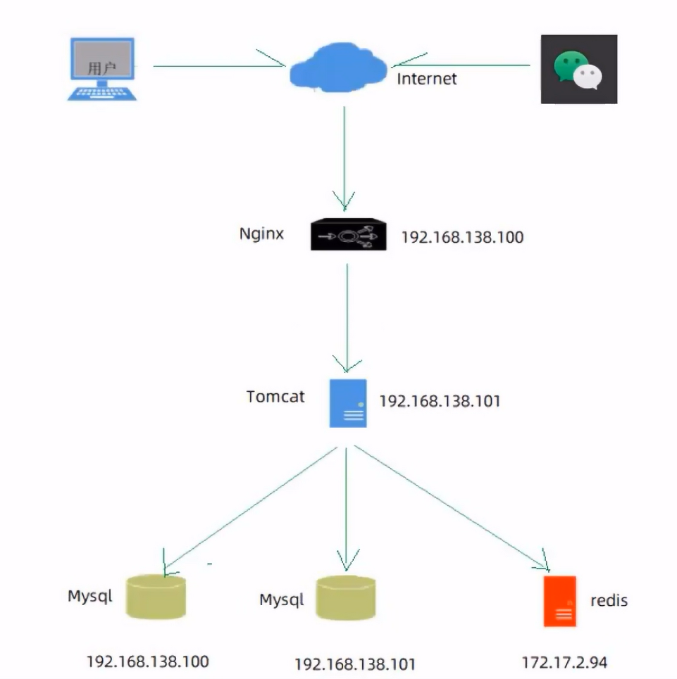
4.2 部署前端项目
- 在服务器A中安装Nginx，将前端项目
打包目录上传到Nginx的html目录下 - 修改Nginx配置文件nginx.conf，新增如下配置
server {
listen 80;
server_name localhost;
location / {
root html/dist;
index index.html;
}
location ^~ /api/ {
rewrite ^/api/(.*)$ /$1 break;
proxy_pass http://192.168.238.132;
}
}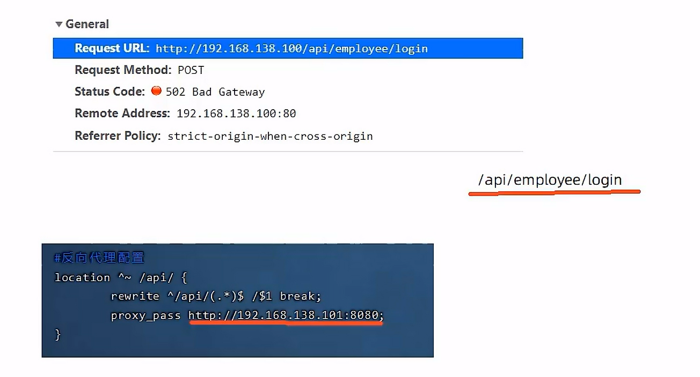
请求 http://192.168.138.100/api/employee/login 转到 http://192.168..138.101:8080/employee/login
4.3 部署后端项目
- 在服务器B中安装JDK，Git，MySql
- 将项目打成jar包，手动上传并部署（当然你也可以选择git拉取代码，然后shell脚本自动部署）
- 部署完后端项目之后，我们就能完成正常的登录功能了，也能进入到后台系统进行增删改查操作
- 图片上传路径可以修改为：/usr/local/img